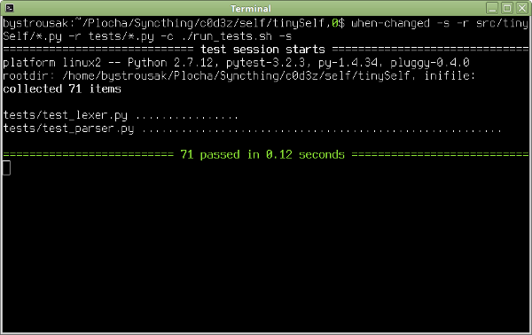
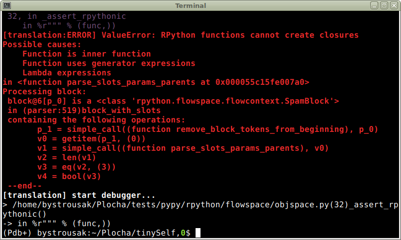
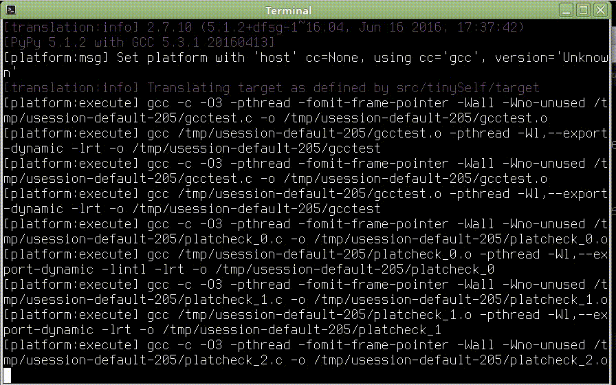

![](data:image/svg+xml,%3Csvg%20xmlns%3D%22http%3A//www.w3.org/2000/svg%22%20viewBox%3D%220%20-0.2%2011%2012.4%22%3E%0A%20%20%3Cdefs%3E%0A%20%20%20%20%3CclipPath%20id%3D%22cloth-tag%22%3E%3Cpolygon%20points%3D%220%2C0.19%200.5%2C0.79%201%2C0.09%201.5%2C0.37%202%2C0.12%202.5%2C0.71%203%2C0.30%203.5%2C0.42%204%2C0.22%204.5%2C0.24%205%2C0.73%205.5%2C0.78%206%2C0.50%206.5%2C0.34%207%2C0.61%207.5%2C0.75%208%2C0.08%208.5%2C0.38%209%2C0.26%209.5%2C0.22%2010%2C0.00%2010.5%2C0.30%2011%2C0.50%2011%2C11.72%2010.5%2C11.58%2010%2C11.73%209.5%2C11.35%209%2C11.64%208.5%2C11.33%208%2C11.53%207.5%2C11.56%207%2C11.91%206.5%2C11.47%206%2C11.28%205.5%2C11.73%205%2C11.68%204.5%2C11.81%204%2C11.90%203.5%2C11.75%203%2C11.86%202.5%2C11.25%202%2C11.24%201.5%2C11.80%201%2C11.31%200.5%2C11.20%200%2C11.32%22/%3E%3C/clipPath%3E%0A%20%20%20%20%3ClinearGradient%20id%3D%22dye-tag%22%20x1%3D%220%22%20y1%3D%220%22%20x2%3D%220.3%22%20y2%3D%221%22%3E%0A%20%20%20%20%20%20%3Cstop%20offset%3D%220%22%20stop-color%3D%22%23a64a26%22/%3E%0A%20%20%20%20%20%20%3Cstop%20offset%3D%221%22%20stop-color%3D%22%238d391b%22/%3E%0A%20%20%20%20%3C/linearGradient%3E%0A%20%20%3C/defs%3E%0A%20%20%3Cg%20clip-path%3D%22url%28%23cloth-tag%29%22%3E%0A%20%20%20%20%3Crect%20width%3D%2211%22%20height%3D%2212%22%20fill%3D%22url%28%23dye-tag%29%22/%3E%0A%20%20%20%20%3Cg%20fill%3D%22%23fffaf2%22%3E%3Crect%20x%3D%220.45%22%20y%3D%220%22%20width%3D%220.35%22%20height%3D%2212%22/%3E%3Crect%20x%3D%221.1%22%20y%3D%220%22%20width%3D%220.2%22%20height%3D%2212%22/%3E%3Crect%20x%3D%2210.2%22%20y%3D%220%22%20width%3D%220.35%22%20height%3D%2212%22/%3E%3Crect%20x%3D%229.7%22%20y%3D%220%22%20width%3D%220.2%22%20height%3D%2212%22/%3E%3C/g%3E%0A%20%20%20%20%3Cg%20fill%3D%22%23fff1e0%22%20shape-rendering%3D%22crispEdges%22%3E%3Crect%20x%3D%223%22%20y%3D%222.5%22%20width%3D%221%22%20height%3D%221%22/%3E%3Crect%20x%3D%222%22%20y%3D%224.5%22%20width%3D%221%22%20height%3D%221%22/%3E%3Crect%20x%3D%223%22%20y%3D%224.5%22%20width%3D%221%22%20height%3D%221%22/%3E%3Crect%20x%3D%224%22%20y%3D%224.5%22%20width%3D%221%22%20height%3D%221%22/%3E%3Crect%20x%3D%226%22%20y%3D%222.5%22%20width%3D%221%22%20height%3D%221%22/%3E%3Crect%20x%3D%227%22%20y%3D%222.5%22%20width%3D%221%22%20height%3D%221%22/%3E%3Crect%20x%3D%228%22%20y%3D%222.5%22%20width%3D%221%22%20height%3D%221%22/%3E%3Crect%20x%3D%226%22%20y%3D%223.5%22%20width%3D%221%22%20height%3D%221%22/%3E%3Crect%20x%3D%226%22%20y%3D%224.5%22%20width%3D%221%22%20height%3D%221%22/%3E%3Crect%20x%3D%227%22%20y%3D%224.5%22%20width%3D%221%22%20height%3D%221%22/%3E%3Crect%20x%3D%228%22%20y%3D%224.5%22%20width%3D%221%22%20height%3D%221%22/%3E%3Crect%20x%3D%222%22%20y%3D%226.5%22%20width%3D%221%22%20height%3D%221%22/%3E%3Crect%20x%3D%223%22%20y%3D%226.5%22%20width%3D%221%22%20height%3D%221%22/%3E%3Crect%20x%3D%224%22%20y%3D%226.5%22%20width%3D%221%22%20height%3D%221%22/%3E%3Crect%20x%3D%223%22%20y%3D%228.5%22%20width%3D%221%22%20height%3D%221%22/%3E%3Crect%20x%3D%226%22%20y%3D%226.5%22%20width%3D%221%22%20height%3D%221%22/%3E%3Crect%20x%3D%227%22%20y%3D%226.5%22%20width%3D%221%22%20height%3D%221%22/%3E%3Crect%20x%3D%228%22%20y%3D%226.5%22%20width%3D%221%22%20height%3D%221%22/%3E%3Crect%20x%3D%226%22%20y%3D%227.5%22%20width%3D%221%22%20height%3D%221%22/%3E%3Crect%20x%3D%226%22%20y%3D%228.5%22%20width%3D%221%22%20height%3D%221%22/%3E%3Crect%20x%3D%227%22%20y%3D%228.5%22%20width%3D%221%22%20height%3D%221%22/%3E%3Crect%20x%3D%228%22%20y%3D%228.5%22%20width%3D%221%22%20height%3D%221%22/%3E%3C/g%3E%0A%20%20%3C/g%3E%0A%3C/svg%3E) Neomezená bitva napříč dimenzemi
Neomezená bitva napříč dimenzemi![](data:image/svg+xml,%3Csvg%20xmlns%3D%22http%3A//www.w3.org/2000/svg%22%20viewBox%3D%220%20-0.2%2011%2012.4%22%3E%0A%20%20%3Cdefs%3E%0A%20%20%20%20%3CclipPath%20id%3D%22cloth-tag%22%3E%3Cpolygon%20points%3D%220%2C0.02%200.5%2C0.33%201%2C0.65%201.5%2C0.26%202%2C0.49%202.5%2C0.60%203%2C0.62%203.5%2C0.04%204%2C0.75%204.5%2C0.43%205%2C0.37%205.5%2C0.66%206%2C0.73%206.5%2C0.57%207%2C0.11%207.5%2C0.12%208%2C0.16%208.5%2C0.13%209%2C0.54%209.5%2C0.23%2010%2C0.76%2010.5%2C0.11%2011%2C0.00%2011%2C11.99%2010.5%2C11.87%2010%2C11.43%209.5%2C11.67%209%2C11.28%208.5%2C11.97%208%2C11.66%207.5%2C11.70%207%2C11.88%206.5%2C11.86%206%2C11.79%205.5%2C11.23%205%2C11.85%204.5%2C11.35%204%2C11.79%203.5%2C11.43%203%2C11.68%202.5%2C11.46%202%2C11.65%201.5%2C11.57%201%2C11.68%200.5%2C11.47%200%2C11.47%22/%3E%3C/clipPath%3E%0A%20%20%20%20%3ClinearGradient%20id%3D%22dye-tag%22%20x1%3D%220%22%20y1%3D%220%22%20x2%3D%220.3%22%20y2%3D%221%22%3E%0A%20%20%20%20%20%20%3Cstop%20offset%3D%220%22%20stop-color%3D%22%23a64a26%22/%3E%0A%20%20%20%20%20%20%3Cstop%20offset%3D%221%22%20stop-color%3D%22%238d391b%22/%3E%0A%20%20%20%20%3C/linearGradient%3E%0A%20%20%3C/defs%3E%0A%20%20%3Cg%20clip-path%3D%22url%28%23cloth-tag%29%22%3E%0A%20%20%20%20%3Crect%20width%3D%2211%22%20height%3D%2212%22%20fill%3D%22url%28%23dye-tag%29%22/%3E%0A%20%20%20%20%3Cg%20fill%3D%22%23fffaf2%22%3E%3Crect%20x%3D%220.45%22%20y%3D%220%22%20width%3D%220.35%22%20height%3D%2212%22/%3E%3Crect%20x%3D%221.1%22%20y%3D%220%22%20width%3D%220.2%22%20height%3D%2212%22/%3E%3Crect%20x%3D%2210.2%22%20y%3D%220%22%20width%3D%220.35%22%20height%3D%2212%22/%3E%3Crect%20x%3D%229.7%22%20y%3D%220%22%20width%3D%220.2%22%20height%3D%2212%22/%3E%3C/g%3E%0A%20%20%20%20%3Cg%20fill%3D%22%23fff1e0%22%20shape-rendering%3D%22crispEdges%22%3E%3Crect%20x%3D%222%22%20y%3D%222.5%22%20width%3D%221%22%20height%3D%221%22/%3E%3Crect%20x%3D%222%22%20y%3D%223.5%22%20width%3D%221%22%20height%3D%221%22/%3E%3Crect%20x%3D%223%22%20y%3D%223.5%22%20width%3D%221%22%20height%3D%221%22/%3E%3Crect%20x%3D%224%22%20y%3D%223.5%22%20width%3D%221%22%20height%3D%221%22/%3E%3Crect%20x%3D%224%22%20y%3D%224.5%22%20width%3D%221%22%20height%3D%221%22/%3E%3Crect%20x%3D%226%22%20y%3D%222.5%22%20width%3D%221%22%20height%3D%221%22/%3E%3Crect%20x%3D%228%22%20y%3D%222.5%22%20width%3D%221%22%20height%3D%221%22/%3E%3Crect%20x%3D%227%22%20y%3D%223.5%22%20width%3D%221%22%20height%3D%221%22/%3E%3Crect%20x%3D%228%22%20y%3D%223.5%22%20width%3D%221%22%20height%3D%221%22/%3E%3Crect%20x%3D%226%22%20y%3D%224.5%22%20width%3D%221%22%20height%3D%221%22/%3E%3Crect%20x%3D%227%22%20y%3D%224.5%22%20width%3D%221%22%20height%3D%221%22/%3E%3Crect%20x%3D%228%22%20y%3D%224.5%22%20width%3D%221%22%20height%3D%221%22/%3E%3Crect%20x%3D%224%22%20y%3D%226.5%22%20width%3D%221%22%20height%3D%221%22/%3E%3Crect%20x%3D%222%22%20y%3D%227.5%22%20width%3D%221%22%20height%3D%221%22/%3E%3Crect%20x%3D%223%22%20y%3D%227.5%22%20width%3D%221%22%20height%3D%221%22/%3E%3Crect%20x%3D%224%22%20y%3D%227.5%22%20width%3D%221%22%20height%3D%221%22/%3E%3Crect%20x%3D%222%22%20y%3D%228.5%22%20width%3D%221%22%20height%3D%221%22/%3E%3Crect%20x%3D%226%22%20y%3D%226.5%22%20width%3D%221%22%20height%3D%221%22/%3E%3Crect%20x%3D%227%22%20y%3D%226.5%22%20width%3D%221%22%20height%3D%221%22/%3E%3Crect%20x%3D%228%22%20y%3D%226.5%22%20width%3D%221%22%20height%3D%221%22/%3E%3Crect%20x%3D%227%22%20y%3D%227.5%22%20width%3D%221%22%20height%3D%221%22/%3E%3Crect%20x%3D%228%22%20y%3D%227.5%22%20width%3D%221%22%20height%3D%221%22/%3E%3Crect%20x%3D%226%22%20y%3D%228.5%22%20width%3D%221%22%20height%3D%221%22/%3E%3Crect%20x%3D%228%22%20y%3D%228.5%22%20width%3D%221%22%20height%3D%221%22/%3E%3C/g%3E%0A%20%20%3C/g%3E%0A%3C/svg%3E) Upgrade na MK4
Upgrade na MK4![](data:image/svg+xml,%3Csvg%20xmlns%3D%22http%3A//www.w3.org/2000/svg%22%20viewBox%3D%220%20-0.2%2011%2012.4%22%3E%0A%20%20%3Cdefs%3E%0A%20%20%20%20%3CclipPath%20id%3D%22cloth-tag%22%3E%3Cpolygon%20points%3D%220%2C0.33%200.5%2C0.60%201%2C0.48%201.5%2C0.52%202%2C0.35%202.5%2C0.63%203%2C0.60%203.5%2C0.25%204%2C0.67%204.5%2C0.42%205%2C0.46%205.5%2C0.38%206%2C0.40%206.5%2C0.14%207%2C0.33%207.5%2C0.54%208%2C0.20%208.5%2C0.31%209%2C0.44%209.5%2C0.54%2010%2C0.09%2010.5%2C0.26%2011%2C0.36%2011%2C11.75%2010.5%2C11.22%2010%2C11.76%209.5%2C11.36%209%2C11.95%208.5%2C12.00%208%2C11.57%207.5%2C11.71%207%2C11.38%206.5%2C11.84%206%2C11.38%205.5%2C11.54%205%2C11.30%204.5%2C11.84%204%2C11.64%203.5%2C11.94%203%2C11.87%202.5%2C11.72%202%2C11.27%201.5%2C11.78%201%2C11.64%200.5%2C11.50%200%2C11.91%22/%3E%3C/clipPath%3E%0A%20%20%20%20%3ClinearGradient%20id%3D%22dye-tag%22%20x1%3D%220%22%20y1%3D%220%22%20x2%3D%220.3%22%20y2%3D%221%22%3E%0A%20%20%20%20%20%20%3Cstop%20offset%3D%220%22%20stop-color%3D%22%23a64a26%22/%3E%0A%20%20%20%20%20%20%3Cstop%20offset%3D%221%22%20stop-color%3D%22%238d391b%22/%3E%0A%20%20%20%20%3C/linearGradient%3E%0A%20%20%3C/defs%3E%0A%20%20%3Cg%20clip-path%3D%22url%28%23cloth-tag%29%22%3E%0A%20%20%20%20%3Crect%20width%3D%2211%22%20height%3D%2212%22%20fill%3D%22url%28%23dye-tag%29%22/%3E%0A%20%20%20%20%3Cg%20fill%3D%22%23fffaf2%22%3E%3Crect%20x%3D%220.45%22%20y%3D%220%22%20width%3D%220.35%22%20height%3D%2212%22/%3E%3Crect%20x%3D%221.1%22%20y%3D%220%22%20width%3D%220.2%22%20height%3D%2212%22/%3E%3Crect%20x%3D%2210.2%22%20y%3D%220%22%20width%3D%220.35%22%20height%3D%2212%22/%3E%3Crect%20x%3D%229.7%22%20y%3D%220%22%20width%3D%220.2%22%20height%3D%2212%22/%3E%3C/g%3E%0A%20%20%20%20%3Cg%20fill%3D%22%23fff1e0%22%20shape-rendering%3D%22crispEdges%22%3E%3Crect%20x%3D%222%22%20y%3D%222.5%22%20width%3D%221%22%20height%3D%221%22/%3E%3Crect%20x%3D%223%22%20y%3D%222.5%22%20width%3D%221%22%20height%3D%221%22/%3E%3Crect%20x%3D%224%22%20y%3D%222.5%22%20width%3D%221%22%20height%3D%221%22/%3E%3Crect%20x%3D%224%22%20y%3D%223.5%22%20width%3D%221%22%20height%3D%221%22/%3E%3Crect%20x%3D%222%22%20y%3D%224.5%22%20width%3D%221%22%20height%3D%221%22/%3E%3Crect%20x%3D%223%22%20y%3D%224.5%22%20width%3D%221%22%20height%3D%221%22/%3E%3Crect%20x%3D%224%22%20y%3D%224.5%22%20width%3D%221%22%20height%3D%221%22/%3E%3Crect%20x%3D%226%22%20y%3D%222.5%22%20width%3D%221%22%20height%3D%221%22/%3E%3Crect%20x%3D%228%22%20y%3D%223.5%22%20width%3D%221%22%20height%3D%221%22/%3E%3Crect%20x%3D%227%22%20y%3D%224.5%22%20width%3D%221%22%20height%3D%221%22/%3E%3Crect%20x%3D%228%22%20y%3D%224.5%22%20width%3D%221%22%20height%3D%221%22/%3E%3Crect%20x%3D%222%22%20y%3D%226.5%22%20width%3D%221%22%20height%3D%221%22/%3E%3Crect%20x%3D%223%22%20y%3D%226.5%22%20width%3D%221%22%20height%3D%221%22/%3E%3Crect%20x%3D%224%22%20y%3D%226.5%22%20width%3D%221%22%20height%3D%221%22/%3E%3Crect%20x%3D%224%22%20y%3D%227.5%22%20width%3D%221%22%20height%3D%221%22/%3E%3Crect%20x%3D%222%22%20y%3D%228.5%22%20width%3D%221%22%20height%3D%221%22/%3E%3Crect%20x%3D%223%22%20y%3D%228.5%22%20width%3D%221%22%20height%3D%221%22/%3E%3Crect%20x%3D%224%22%20y%3D%228.5%22%20width%3D%221%22%20height%3D%221%22/%3E%3Crect%20x%3D%227%22%20y%3D%226.5%22%20width%3D%221%22%20height%3D%221%22/%3E%3Crect%20x%3D%228%22%20y%3D%226.5%22%20width%3D%221%22%20height%3D%221%22/%3E%3Crect%20x%3D%228%22%20y%3D%227.5%22%20width%3D%221%22%20height%3D%221%22/%3E%3Crect%20x%3D%226%22%20y%3D%228.5%22%20width%3D%221%22%20height%3D%221%22/%3E%3C/g%3E%0A%20%20%3C/g%3E%0A%3C/svg%3E) HobbyCell
HobbyCell![](data:image/svg+xml,%3Csvg%20xmlns%3D%22http%3A//www.w3.org/2000/svg%22%20viewBox%3D%220%20-0.2%2011%2012.4%22%3E%0A%20%20%3Cdefs%3E%0A%20%20%20%20%3CclipPath%20id%3D%22cloth-tag%22%3E%3Cpolygon%20points%3D%220%2C0.13%200.5%2C0.62%201%2C0.31%201.5%2C0.32%202%2C0.75%202.5%2C0.65%203%2C0.62%203.5%2C0.28%204%2C0.59%204.5%2C0.22%205%2C0.36%205.5%2C0.34%206%2C0.33%206.5%2C0.80%207%2C0.71%207.5%2C0.18%208%2C0.59%208.5%2C0.50%209%2C0.20%209.5%2C0.34%2010%2C0.06%2010.5%2C0.22%2011%2C0.38%2011%2C11.93%2010.5%2C11.70%2010%2C11.40%209.5%2C11.79%209%2C11.49%208.5%2C11.98%208%2C11.91%207.5%2C11.47%207%2C11.95%206.5%2C11.52%206%2C11.72%205.5%2C11.26%205%2C11.83%204.5%2C11.85%204%2C11.74%203.5%2C11.97%203%2C11.83%202.5%2C11.40%202%2C11.79%201.5%2C11.61%201%2C11.98%200.5%2C11.88%200%2C11.98%22/%3E%3C/clipPath%3E%0A%20%20%20%20%3ClinearGradient%20id%3D%22dye-tag%22%20x1%3D%220%22%20y1%3D%220%22%20x2%3D%220.3%22%20y2%3D%221%22%3E%0A%20%20%20%20%20%20%3Cstop%20offset%3D%220%22%20stop-color%3D%22%23a64a26%22/%3E%0A%20%20%20%20%20%20%3Cstop%20offset%3D%221%22%20stop-color%3D%22%238d391b%22/%3E%0A%20%20%20%20%3C/linearGradient%3E%0A%20%20%3C/defs%3E%0A%20%20%3Cg%20clip-path%3D%22url%28%23cloth-tag%29%22%3E%0A%20%20%20%20%3Crect%20width%3D%2211%22%20height%3D%2212%22%20fill%3D%22url%28%23dye-tag%29%22/%3E%0A%20%20%20%20%3Cg%20fill%3D%22%23fffaf2%22%3E%3Crect%20x%3D%220.45%22%20y%3D%220%22%20width%3D%220.35%22%20height%3D%2212%22/%3E%3Crect%20x%3D%221.1%22%20y%3D%220%22%20width%3D%220.2%22%20height%3D%2212%22/%3E%3Crect%20x%3D%2210.2%22%20y%3D%220%22%20width%3D%220.35%22%20height%3D%2212%22/%3E%3Crect%20x%3D%229.7%22%20y%3D%220%22%20width%3D%220.2%22%20height%3D%2212%22/%3E%3C/g%3E%0A%20%20%20%20%3Cg%20fill%3D%22%23fff1e0%22%20shape-rendering%3D%22crispEdges%22%3E%3Crect%20x%3D%222%22%20y%3D%222.5%22%20width%3D%221%22%20height%3D%221%22/%3E%3Crect%20x%3D%223%22%20y%3D%222.5%22%20width%3D%221%22%20height%3D%221%22/%3E%3Crect%20x%3D%224%22%20y%3D%222.5%22%20width%3D%221%22%20height%3D%221%22/%3E%3Crect%20x%3D%224%22%20y%3D%224.5%22%20width%3D%221%22%20height%3D%221%22/%3E%3Crect%20x%3D%226%22%20y%3D%222.5%22%20width%3D%221%22%20height%3D%221%22/%3E%3Crect%20x%3D%227%22%20y%3D%222.5%22%20width%3D%221%22%20height%3D%221%22/%3E%3Crect%20x%3D%228%22%20y%3D%222.5%22%20width%3D%221%22%20height%3D%221%22/%3E%3Crect%20x%3D%226%22%20y%3D%224.5%22%20width%3D%221%22%20height%3D%221%22/%3E%3Crect%20x%3D%223%22%20y%3D%226.5%22%20width%3D%221%22%20height%3D%221%22/%3E%3Crect%20x%3D%222%22%20y%3D%228.5%22%20width%3D%221%22%20height%3D%221%22/%3E%3Crect%20x%3D%223%22%20y%3D%228.5%22%20width%3D%221%22%20height%3D%221%22/%3E%3Crect%20x%3D%224%22%20y%3D%228.5%22%20width%3D%221%22%20height%3D%221%22/%3E%3Crect%20x%3D%227%22%20y%3D%226.5%22%20width%3D%221%22%20height%3D%221%22/%3E%3Crect%20x%3D%226%22%20y%3D%228.5%22%20width%3D%221%22%20height%3D%221%22/%3E%3Crect%20x%3D%227%22%20y%3D%228.5%22%20width%3D%221%22%20height%3D%221%22/%3E%3Crect%20x%3D%228%22%20y%3D%228.5%22%20width%3D%221%22%20height%3D%221%22/%3E%3C/g%3E%0A%20%20%3C/g%3E%0A%3C/svg%3E) CaptchaCoin
CaptchaCoin![](data:image/svg+xml,%3Csvg%20xmlns%3D%22http%3A//www.w3.org/2000/svg%22%20viewBox%3D%220%20-0.2%2011%2012.4%22%3E%0A%20%20%3Cdefs%3E%0A%20%20%20%20%3CclipPath%20id%3D%22cloth-tag%22%3E%3Cpolygon%20points%3D%220%2C0.58%200.5%2C0.27%201%2C0.29%201.5%2C0.32%202%2C0.60%202.5%2C0.32%203%2C0.27%203.5%2C0.41%204%2C0.16%204.5%2C0.51%205%2C0.29%205.5%2C0.18%206%2C0.44%206.5%2C0.23%207%2C0.60%207.5%2C0.30%208%2C0.69%208.5%2C0.71%209%2C0.42%209.5%2C0.53%2010%2C0.52%2010.5%2C0.56%2011%2C0.49%2011%2C11.34%2010.5%2C11.33%2010%2C11.60%209.5%2C11.25%209%2C11.76%208.5%2C11.47%208%2C11.55%207.5%2C11.25%207%2C11.48%206.5%2C11.21%206%2C11.98%205.5%2C11.91%205%2C11.21%204.5%2C11.86%204%2C11.48%203.5%2C11.49%203%2C11.81%202.5%2C11.32%202%2C11.66%201.5%2C11.73%201%2C11.48%200.5%2C11.22%200%2C11.33%22/%3E%3C/clipPath%3E%0A%20%20%20%20%3ClinearGradient%20id%3D%22dye-tag%22%20x1%3D%220%22%20y1%3D%220%22%20x2%3D%220.3%22%20y2%3D%221%22%3E%0A%20%20%20%20%20%20%3Cstop%20offset%3D%220%22%20stop-color%3D%22%23a64a26%22/%3E%0A%20%20%20%20%20%20%3Cstop%20offset%3D%221%22%20stop-color%3D%22%238d391b%22/%3E%0A%20%20%20%20%3C/linearGradient%3E%0A%20%20%3C/defs%3E%0A%20%20%3Cg%20clip-path%3D%22url%28%23cloth-tag%29%22%3E%0A%20%20%20%20%3Crect%20width%3D%2211%22%20height%3D%2212%22%20fill%3D%22url%28%23dye-tag%29%22/%3E%0A%20%20%20%20%3Cg%20fill%3D%22%23fffaf2%22%3E%3Crect%20x%3D%220.45%22%20y%3D%220%22%20width%3D%220.35%22%20height%3D%2212%22/%3E%3Crect%20x%3D%221.1%22%20y%3D%220%22%20width%3D%220.2%22%20height%3D%2212%22/%3E%3Crect%20x%3D%2210.2%22%20y%3D%220%22%20width%3D%220.35%22%20height%3D%2212%22/%3E%3Crect%20x%3D%229.7%22%20y%3D%220%22%20width%3D%220.2%22%20height%3D%2212%22/%3E%3C/g%3E%0A%20%20%20%20%3Cg%20fill%3D%22%23fff1e0%22%20shape-rendering%3D%22crispEdges%22%3E%3Crect%20x%3D%222%22%20y%3D%222.5%22%20width%3D%221%22%20height%3D%221%22/%3E%3Crect%20x%3D%223%22%20y%3D%222.5%22%20width%3D%221%22%20height%3D%221%22/%3E%3Crect%20x%3D%224%22%20y%3D%222.5%22%20width%3D%221%22%20height%3D%221%22/%3E%3Crect%20x%3D%222%22%20y%3D%224.5%22%20width%3D%221%22%20height%3D%221%22/%3E%3Crect%20x%3D%224%22%20y%3D%224.5%22%20width%3D%221%22%20height%3D%221%22/%3E%3Crect%20x%3D%226%22%20y%3D%222.5%22%20width%3D%221%22%20height%3D%221%22/%3E%3Crect%20x%3D%227%22%20y%3D%222.5%22%20width%3D%221%22%20height%3D%221%22/%3E%3Crect%20x%3D%227%22%20y%3D%223.5%22%20width%3D%221%22%20height%3D%221%22/%3E%3Crect%20x%3D%227%22%20y%3D%224.5%22%20width%3D%221%22%20height%3D%221%22/%3E%3Crect%20x%3D%228%22%20y%3D%224.5%22%20width%3D%221%22%20height%3D%221%22/%3E%3Crect%20x%3D%222%22%20y%3D%226.5%22%20width%3D%221%22%20height%3D%221%22/%3E%3Crect%20x%3D%224%22%20y%3D%226.5%22%20width%3D%221%22%20height%3D%221%22/%3E%3Crect%20x%3D%222%22%20y%3D%228.5%22%20width%3D%221%22%20height%3D%221%22/%3E%3Crect%20x%3D%223%22%20y%3D%228.5%22%20width%3D%221%22%20height%3D%221%22/%3E%3Crect%20x%3D%224%22%20y%3D%228.5%22%20width%3D%221%22%20height%3D%221%22/%3E%3Crect%20x%3D%227%22%20y%3D%226.5%22%20width%3D%221%22%20height%3D%221%22/%3E%3Crect%20x%3D%228%22%20y%3D%226.5%22%20width%3D%221%22%20height%3D%221%22/%3E%3Crect%20x%3D%227%22%20y%3D%227.5%22%20width%3D%221%22%20height%3D%221%22/%3E%3Crect%20x%3D%226%22%20y%3D%228.5%22%20width%3D%221%22%20height%3D%221%22/%3E%3Crect%20x%3D%227%22%20y%3D%228.5%22%20width%3D%221%22%20height%3D%221%22/%3E%3C/g%3E%0A%20%20%3C/g%3E%0A%3C/svg%3E) Jak na vlastní LLM (GPT)
Jak na vlastní LLM (GPT)![](data:image/svg+xml,%3Csvg%20xmlns%3D%22http%3A//www.w3.org/2000/svg%22%20viewBox%3D%220%20-0.2%2011%2012.4%22%3E%0A%20%20%3Cdefs%3E%0A%20%20%20%20%3CclipPath%20id%3D%22cloth-tag%22%3E%3Cpolygon%20points%3D%220%2C0.27%200.5%2C0.61%201%2C0.73%201.5%2C0.37%202%2C0.04%202.5%2C0.36%203%2C0.65%203.5%2C0.18%204%2C0.14%204.5%2C0.50%205%2C0.60%205.5%2C0.13%206%2C0.61%206.5%2C0.76%207%2C0.26%207.5%2C0.09%208%2C0.67%208.5%2C0.69%209%2C0.41%209.5%2C0.35%2010%2C0.60%2010.5%2C0.13%2011%2C0.05%2011%2C11.56%2010.5%2C11.95%2010%2C11.67%209.5%2C11.53%209%2C11.87%208.5%2C11.92%208%2C11.27%207.5%2C11.44%207%2C11.82%206.5%2C11.46%206%2C11.62%205.5%2C11.38%205%2C11.81%204.5%2C11.47%204%2C11.41%203.5%2C11.87%203%2C11.82%202.5%2C11.32%202%2C11.85%201.5%2C11.29%201%2C11.63%200.5%2C11.23%200%2C11.92%22/%3E%3C/clipPath%3E%0A%20%20%20%20%3ClinearGradient%20id%3D%22dye-tag%22%20x1%3D%220%22%20y1%3D%220%22%20x2%3D%220.3%22%20y2%3D%221%22%3E%0A%20%20%20%20%20%20%3Cstop%20offset%3D%220%22%20stop-color%3D%22%23a64a26%22/%3E%0A%20%20%20%20%20%20%3Cstop%20offset%3D%221%22%20stop-color%3D%22%238d391b%22/%3E%0A%20%20%20%20%3C/linearGradient%3E%0A%20%20%3C/defs%3E%0A%20%20%3Cg%20clip-path%3D%22url%28%23cloth-tag%29%22%3E%0A%20%20%20%20%3Crect%20width%3D%2211%22%20height%3D%2212%22%20fill%3D%22url%28%23dye-tag%29%22/%3E%0A%20%20%20%20%3Cg%20fill%3D%22%23fffaf2%22%3E%3Crect%20x%3D%220.45%22%20y%3D%220%22%20width%3D%220.35%22%20height%3D%2212%22/%3E%3Crect%20x%3D%221.1%22%20y%3D%220%22%20width%3D%220.2%22%20height%3D%2212%22/%3E%3Crect%20x%3D%2210.2%22%20y%3D%220%22%20width%3D%220.35%22%20height%3D%2212%22/%3E%3Crect%20x%3D%229.7%22%20y%3D%220%22%20width%3D%220.2%22%20height%3D%2212%22/%3E%3C/g%3E%0A%20%20%20%20%3Cg%20fill%3D%22%23fff1e0%22%20shape-rendering%3D%22crispEdges%22%3E%3Crect%20x%3D%222%22%20y%3D%222.5%22%20width%3D%221%22%20height%3D%221%22/%3E%3Crect%20x%3D%223%22%20y%3D%222.5%22%20width%3D%221%22%20height%3D%221%22/%3E%3Crect%20x%3D%224%22%20y%3D%222.5%22%20width%3D%221%22%20height%3D%221%22/%3E%3Crect%20x%3D%224%22%20y%3D%224.5%22%20width%3D%221%22%20height%3D%221%22/%3E%3Crect%20x%3D%226%22%20y%3D%222.5%22%20width%3D%221%22%20height%3D%221%22/%3E%3Crect%20x%3D%227%22%20y%3D%222.5%22%20width%3D%221%22%20height%3D%221%22/%3E%3Crect%20x%3D%228%22%20y%3D%222.5%22%20width%3D%221%22%20height%3D%221%22/%3E%3Crect%20x%3D%226%22%20y%3D%224.5%22%20width%3D%221%22%20height%3D%221%22/%3E%3Crect%20x%3D%222%22%20y%3D%226.5%22%20width%3D%221%22%20height%3D%221%22/%3E%3Crect%20x%3D%222%22%20y%3D%227.5%22%20width%3D%221%22%20height%3D%221%22/%3E%3Crect%20x%3D%224%22%20y%3D%227.5%22%20width%3D%221%22%20height%3D%221%22/%3E%3Crect%20x%3D%222%22%20y%3D%228.5%22%20width%3D%221%22%20height%3D%221%22/%3E%3Crect%20x%3D%223%22%20y%3D%228.5%22%20width%3D%221%22%20height%3D%221%22/%3E%3Crect%20x%3D%224%22%20y%3D%228.5%22%20width%3D%221%22%20height%3D%221%22/%3E%3Crect%20x%3D%228%22%20y%3D%226.5%22%20width%3D%221%22%20height%3D%221%22/%3E%3Crect%20x%3D%226%22%20y%3D%227.5%22%20width%3D%221%22%20height%3D%221%22/%3E%3Crect%20x%3D%228%22%20y%3D%227.5%22%20width%3D%221%22%20height%3D%221%22/%3E%3Crect%20x%3D%226%22%20y%3D%228.5%22%20width%3D%221%22%20height%3D%221%22/%3E%3Crect%20x%3D%227%22%20y%3D%228.5%22%20width%3D%221%22%20height%3D%221%22/%3E%3Crect%20x%3D%228%22%20y%3D%228.5%22%20width%3D%221%22%20height%3D%221%22/%3E%3C/g%3E%0A%20%20%3C/g%3E%0A%3C/svg%3E) Software
Software![](data:image/svg+xml,%3Csvg%20xmlns%3D%22http%3A//www.w3.org/2000/svg%22%20viewBox%3D%220%20-0.2%2011%2012.4%22%3E%0A%20%20%3Cdefs%3E%0A%20%20%20%20%3CclipPath%20id%3D%22cloth-tag%22%3E%3Cpolygon%20points%3D%220%2C0.42%200.5%2C0.66%201%2C0.49%201.5%2C0.03%202%2C0.62%202.5%2C0.43%203%2C0.22%203.5%2C0.05%204%2C0.12%204.5%2C0.37%205%2C0.68%205.5%2C0.07%206%2C0.19%206.5%2C0.66%207%2C0.01%207.5%2C0.16%208%2C0.53%208.5%2C0.15%209%2C0.08%209.5%2C0.50%2010%2C0.05%2010.5%2C0.13%2011%2C0.20%2011%2C11.87%2010.5%2C11.84%2010%2C11.23%209.5%2C11.91%209%2C11.77%208.5%2C11.27%208%2C11.74%207.5%2C11.57%207%2C11.83%206.5%2C11.77%206%2C11.48%205.5%2C11.88%205%2C11.42%204.5%2C11.64%204%2C11.81%203.5%2C11.60%203%2C11.77%202.5%2C11.47%202%2C11.30%201.5%2C11.69%201%2C11.33%200.5%2C11.52%200%2C12.00%22/%3E%3C/clipPath%3E%0A%20%20%20%20%3ClinearGradient%20id%3D%22dye-tag%22%20x1%3D%220%22%20y1%3D%220%22%20x2%3D%220.3%22%20y2%3D%221%22%3E%0A%20%20%20%20%20%20%3Cstop%20offset%3D%220%22%20stop-color%3D%22%23a64a26%22/%3E%0A%20%20%20%20%20%20%3Cstop%20offset%3D%221%22%20stop-color%3D%22%238d391b%22/%3E%0A%20%20%20%20%3C/linearGradient%3E%0A%20%20%3C/defs%3E%0A%20%20%3Cg%20clip-path%3D%22url%28%23cloth-tag%29%22%3E%0A%20%20%20%20%3Crect%20width%3D%2211%22%20height%3D%2212%22%20fill%3D%22url%28%23dye-tag%29%22/%3E%0A%20%20%20%20%3Cg%20fill%3D%22%23fffaf2%22%3E%3Crect%20x%3D%220.45%22%20y%3D%220%22%20width%3D%220.35%22%20height%3D%2212%22/%3E%3Crect%20x%3D%221.1%22%20y%3D%220%22%20width%3D%220.2%22%20height%3D%2212%22/%3E%3Crect%20x%3D%2210.2%22%20y%3D%220%22%20width%3D%220.35%22%20height%3D%2212%22/%3E%3Crect%20x%3D%229.7%22%20y%3D%220%22%20width%3D%220.2%22%20height%3D%2212%22/%3E%3C/g%3E%0A%20%20%20%20%3Cg%20fill%3D%22%23fff1e0%22%20shape-rendering%3D%22crispEdges%22%3E%3Crect%20x%3D%222%22%20y%3D%222.5%22%20width%3D%221%22%20height%3D%221%22/%3E%3Crect%20x%3D%222%22%20y%3D%223.5%22%20width%3D%221%22%20height%3D%221%22/%3E%3Crect%20x%3D%223%22%20y%3D%223.5%22%20width%3D%221%22%20height%3D%221%22/%3E%3Crect%20x%3D%224%22%20y%3D%223.5%22%20width%3D%221%22%20height%3D%221%22/%3E%3Crect%20x%3D%224%22%20y%3D%224.5%22%20width%3D%221%22%20height%3D%221%22/%3E%3Crect%20x%3D%226%22%20y%3D%222.5%22%20width%3D%221%22%20height%3D%221%22/%3E%3Crect%20x%3D%227%22%20y%3D%222.5%22%20width%3D%221%22%20height%3D%221%22/%3E%3Crect%20x%3D%228%22%20y%3D%222.5%22%20width%3D%221%22%20height%3D%221%22/%3E%3Crect%20x%3D%226%22%20y%3D%223.5%22%20width%3D%221%22%20height%3D%221%22/%3E%3Crect%20x%3D%228%22%20y%3D%223.5%22%20width%3D%221%22%20height%3D%221%22/%3E%3Crect%20x%3D%228%22%20y%3D%224.5%22%20width%3D%221%22%20height%3D%221%22/%3E%3Crect%20x%3D%224%22%20y%3D%226.5%22%20width%3D%221%22%20height%3D%221%22/%3E%3Crect%20x%3D%222%22%20y%3D%227.5%22%20width%3D%221%22%20height%3D%221%22/%3E%3Crect%20x%3D%223%22%20y%3D%227.5%22%20width%3D%221%22%20height%3D%221%22/%3E%3Crect%20x%3D%224%22%20y%3D%227.5%22%20width%3D%221%22%20height%3D%221%22/%3E%3Crect%20x%3D%222%22%20y%3D%228.5%22%20width%3D%221%22%20height%3D%221%22/%3E%3Crect%20x%3D%228%22%20y%3D%226.5%22%20width%3D%221%22%20height%3D%221%22/%3E%3Crect%20x%3D%226%22%20y%3D%227.5%22%20width%3D%221%22%20height%3D%221%22/%3E%3Crect%20x%3D%228%22%20y%3D%227.5%22%20width%3D%221%22%20height%3D%221%22/%3E%3Crect%20x%3D%226%22%20y%3D%228.5%22%20width%3D%221%22%20height%3D%221%22/%3E%3Crect%20x%3D%227%22%20y%3D%228.5%22%20width%3D%221%22%20height%3D%221%22/%3E%3Crect%20x%3D%228%22%20y%3D%228.5%22%20width%3D%221%22%20height%3D%221%22/%3E%3C/g%3E%0A%20%20%3C/g%3E%0A%3C/svg%3E) Paromobilita je budoucnost
Paromobilita je budoucnost![](data:image/svg+xml,%3Csvg%20xmlns%3D%22http%3A//www.w3.org/2000/svg%22%20viewBox%3D%220%20-0.2%2011%2012.4%22%3E%0A%20%20%3Cdefs%3E%0A%20%20%20%20%3CclipPath%20id%3D%22cloth-tag%22%3E%3Cpolygon%20points%3D%220%2C0.71%200.5%2C0.56%201%2C0.30%201.5%2C0.79%202%2C0.46%202.5%2C0.31%203%2C0.28%203.5%2C0.77%204%2C0.50%204.5%2C0.60%205%2C0.45%205.5%2C0.60%206%2C0.80%206.5%2C0.47%207%2C0.59%207.5%2C0.31%208%2C0.45%208.5%2C0.36%209%2C0.75%209.5%2C0.26%2010%2C0.66%2010.5%2C0.52%2011%2C0.55%2011%2C11.33%2010.5%2C11.76%2010%2C11.39%209.5%2C11.83%209%2C12.00%208.5%2C11.47%208%2C11.64%207.5%2C11.28%207%2C11.22%206.5%2C11.26%206%2C11.90%205.5%2C11.31%205%2C11.23%204.5%2C11.99%204%2C11.53%203.5%2C11.27%203%2C11.86%202.5%2C11.79%202%2C11.80%201.5%2C11.92%201%2C11.40%200.5%2C11.34%200%2C11.55%22/%3E%3C/clipPath%3E%0A%20%20%20%20%3ClinearGradient%20id%3D%22dye-tag%22%20x1%3D%220%22%20y1%3D%220%22%20x2%3D%220.3%22%20y2%3D%221%22%3E%0A%20%20%20%20%20%20%3Cstop%20offset%3D%220%22%20stop-color%3D%22%23a64a26%22/%3E%0A%20%20%20%20%20%20%3Cstop%20offset%3D%221%22%20stop-color%3D%22%238d391b%22/%3E%0A%20%20%20%20%3C/linearGradient%3E%0A%20%20%3C/defs%3E%0A%20%20%3Cg%20clip-path%3D%22url%28%23cloth-tag%29%22%3E%0A%20%20%20%20%3Crect%20width%3D%2211%22%20height%3D%2212%22%20fill%3D%22url%28%23dye-tag%29%22/%3E%0A%20%20%20%20%3Cg%20fill%3D%22%23fffaf2%22%3E%3Crect%20x%3D%220.45%22%20y%3D%220%22%20width%3D%220.35%22%20height%3D%2212%22/%3E%3Crect%20x%3D%221.1%22%20y%3D%220%22%20width%3D%220.2%22%20height%3D%2212%22/%3E%3Crect%20x%3D%2210.2%22%20y%3D%220%22%20width%3D%220.35%22%20height%3D%2212%22/%3E%3Crect%20x%3D%229.7%22%20y%3D%220%22%20width%3D%220.2%22%20height%3D%2212%22/%3E%3C/g%3E%0A%20%20%20%20%3Cg%20fill%3D%22%23fff1e0%22%20shape-rendering%3D%22crispEdges%22%3E%3Crect%20x%3D%224%22%20y%3D%222.5%22%20width%3D%221%22%20height%3D%221%22/%3E%3Crect%20x%3D%222%22%20y%3D%223.5%22%20width%3D%221%22%20height%3D%221%22/%3E%3Crect%20x%3D%224%22%20y%3D%223.5%22%20width%3D%221%22%20height%3D%221%22/%3E%3Crect%20x%3D%222%22%20y%3D%224.5%22%20width%3D%221%22%20height%3D%221%22/%3E%3Crect%20x%3D%223%22%20y%3D%224.5%22%20width%3D%221%22%20height%3D%221%22/%3E%3Crect%20x%3D%224%22%20y%3D%224.5%22%20width%3D%221%22%20height%3D%221%22/%3E%3Crect%20x%3D%226%22%20y%3D%222.5%22%20width%3D%221%22%20height%3D%221%22/%3E%3Crect%20x%3D%226%22%20y%3D%223.5%22%20width%3D%221%22%20height%3D%221%22/%3E%3Crect%20x%3D%228%22%20y%3D%223.5%22%20width%3D%221%22%20height%3D%221%22/%3E%3Crect%20x%3D%226%22%20y%3D%224.5%22%20width%3D%221%22%20height%3D%221%22/%3E%3Crect%20x%3D%227%22%20y%3D%224.5%22%20width%3D%221%22%20height%3D%221%22/%3E%3Crect%20x%3D%228%22%20y%3D%224.5%22%20width%3D%221%22%20height%3D%221%22/%3E%3Crect%20x%3D%222%22%20y%3D%226.5%22%20width%3D%221%22%20height%3D%221%22/%3E%3Crect%20x%3D%223%22%20y%3D%226.5%22%20width%3D%221%22%20height%3D%221%22/%3E%3Crect%20x%3D%224%22%20y%3D%226.5%22%20width%3D%221%22%20height%3D%221%22/%3E%3Crect%20x%3D%223%22%20y%3D%227.5%22%20width%3D%221%22%20height%3D%221%22/%3E%3Crect%20x%3D%224%22%20y%3D%227.5%22%20width%3D%221%22%20height%3D%221%22/%3E%3Crect%20x%3D%224%22%20y%3D%228.5%22%20width%3D%221%22%20height%3D%221%22/%3E%3Crect%20x%3D%226%22%20y%3D%226.5%22%20width%3D%221%22%20height%3D%221%22/%3E%3Crect%20x%3D%227%22%20y%3D%226.5%22%20width%3D%221%22%20height%3D%221%22/%3E%3Crect%20x%3D%228%22%20y%3D%226.5%22%20width%3D%221%22%20height%3D%221%22/%3E%3Crect%20x%3D%226%22%20y%3D%227.5%22%20width%3D%221%22%20height%3D%221%22/%3E%3Crect%20x%3D%227%22%20y%3D%227.5%22%20width%3D%221%22%20height%3D%221%22/%3E%3Crect%20x%3D%226%22%20y%3D%228.5%22%20width%3D%221%22%20height%3D%221%22/%3E%3C/g%3E%0A%20%20%3C/g%3E%0A%3C/svg%3E) Algoritmus hledání programátorské práce 2021/4
Algoritmus hledání programátorské práce 2021/4![](data:image/svg+xml,%3Csvg%20xmlns%3D%22http%3A//www.w3.org/2000/svg%22%20viewBox%3D%220%20-0.2%2011%2012.4%22%3E%0A%20%20%3Cdefs%3E%0A%20%20%20%20%3CclipPath%20id%3D%22cloth-tag%22%3E%3Cpolygon%20points%3D%220%2C0.58%200.5%2C0.71%201%2C0.15%201.5%2C0.72%202%2C0.23%202.5%2C0.56%203%2C0.57%203.5%2C0.72%204%2C0.39%204.5%2C0.45%205%2C0.73%205.5%2C0.29%206%2C0.45%206.5%2C0.61%207%2C0.66%207.5%2C0.67%208%2C0.72%208.5%2C0.68%209%2C0.58%209.5%2C0.17%2010%2C0.41%2010.5%2C0.37%2011%2C0.54%2011%2C11.66%2010.5%2C11.66%2010%2C11.68%209.5%2C11.64%209%2C11.28%208.5%2C11.96%208%2C11.21%207.5%2C11.61%207%2C11.32%206.5%2C11.62%206%2C11.98%205.5%2C11.64%205%2C11.31%204.5%2C11.50%204%2C11.98%203.5%2C11.78%203%2C11.84%202.5%2C11.88%202%2C11.21%201.5%2C11.22%201%2C11.90%200.5%2C11.91%200%2C11.33%22/%3E%3C/clipPath%3E%0A%20%20%20%20%3ClinearGradient%20id%3D%22dye-tag%22%20x1%3D%220%22%20y1%3D%220%22%20x2%3D%220.3%22%20y2%3D%221%22%3E%0A%20%20%20%20%20%20%3Cstop%20offset%3D%220%22%20stop-color%3D%22%23a64a26%22/%3E%0A%20%20%20%20%20%20%3Cstop%20offset%3D%221%22%20stop-color%3D%22%238d391b%22/%3E%0A%20%20%20%20%3C/linearGradient%3E%0A%20%20%3C/defs%3E%0A%20%20%3Cg%20clip-path%3D%22url%28%23cloth-tag%29%22%3E%0A%20%20%20%20%3Crect%20width%3D%2211%22%20height%3D%2212%22%20fill%3D%22url%28%23dye-tag%29%22/%3E%0A%20%20%20%20%3Cg%20fill%3D%22%23fffaf2%22%3E%3Crect%20x%3D%220.45%22%20y%3D%220%22%20width%3D%220.35%22%20height%3D%2212%22/%3E%3Crect%20x%3D%221.1%22%20y%3D%220%22%20width%3D%220.2%22%20height%3D%2212%22/%3E%3Crect%20x%3D%2210.2%22%20y%3D%220%22%20width%3D%220.35%22%20height%3D%2212%22/%3E%3Crect%20x%3D%229.7%22%20y%3D%220%22%20width%3D%220.2%22%20height%3D%2212%22/%3E%3C/g%3E%0A%20%20%20%20%3Cg%20fill%3D%22%23fff1e0%22%20shape-rendering%3D%22crispEdges%22%3E%3Crect%20x%3D%222%22%20y%3D%222.5%22%20width%3D%221%22%20height%3D%221%22/%3E%3Crect%20x%3D%223%22%20y%3D%222.5%22%20width%3D%221%22%20height%3D%221%22/%3E%3Crect%20x%3D%224%22%20y%3D%222.5%22%20width%3D%221%22%20height%3D%221%22/%3E%3Crect%20x%3D%224%22%20y%3D%223.5%22%20width%3D%221%22%20height%3D%221%22/%3E%3Crect%20x%3D%222%22%20y%3D%224.5%22%20width%3D%221%22%20height%3D%221%22/%3E%3Crect%20x%3D%223%22%20y%3D%224.5%22%20width%3D%221%22%20height%3D%221%22/%3E%3Crect%20x%3D%224%22%20y%3D%224.5%22%20width%3D%221%22%20height%3D%221%22/%3E%3Crect%20x%3D%226%22%20y%3D%222.5%22%20width%3D%221%22%20height%3D%221%22/%3E%3Crect%20x%3D%227%22%20y%3D%222.5%22%20width%3D%221%22%20height%3D%221%22/%3E%3Crect%20x%3D%228%22%20y%3D%222.5%22%20width%3D%221%22%20height%3D%221%22/%3E%3Crect%20x%3D%226%22%20y%3D%223.5%22%20width%3D%221%22%20height%3D%221%22/%3E%3Crect%20x%3D%226%22%20y%3D%224.5%22%20width%3D%221%22%20height%3D%221%22/%3E%3Crect%20x%3D%227%22%20y%3D%224.5%22%20width%3D%221%22%20height%3D%221%22/%3E%3Crect%20x%3D%228%22%20y%3D%224.5%22%20width%3D%221%22%20height%3D%221%22/%3E%3Crect%20x%3D%222%22%20y%3D%226.5%22%20width%3D%221%22%20height%3D%221%22/%3E%3Crect%20x%3D%223%22%20y%3D%226.5%22%20width%3D%221%22%20height%3D%221%22/%3E%3Crect%20x%3D%223%22%20y%3D%227.5%22%20width%3D%221%22%20height%3D%221%22/%3E%3Crect%20x%3D%223%22%20y%3D%228.5%22%20width%3D%221%22%20height%3D%221%22/%3E%3Crect%20x%3D%224%22%20y%3D%228.5%22%20width%3D%221%22%20height%3D%221%22/%3E%3Crect%20x%3D%227%22%20y%3D%226.5%22%20width%3D%221%22%20height%3D%221%22/%3E%3Crect%20x%3D%228%22%20y%3D%226.5%22%20width%3D%221%22%20height%3D%221%22/%3E%3Crect%20x%3D%227%22%20y%3D%227.5%22%20width%3D%221%22%20height%3D%221%22/%3E%3Crect%20x%3D%226%22%20y%3D%228.5%22%20width%3D%221%22%20height%3D%221%22/%3E%3Crect%20x%3D%227%22%20y%3D%228.5%22%20width%3D%221%22%20height%3D%221%22/%3E%3C/g%3E%0A%20%20%3C/g%3E%0A%3C/svg%3E) Nastavení Blenderu pro 3D tisk
Nastavení Blenderu pro 3D tisk![](data:image/svg+xml,%3Csvg%20xmlns%3D%22http%3A//www.w3.org/2000/svg%22%20viewBox%3D%220%20-0.2%2011%2012.4%22%3E%0A%20%20%3Cdefs%3E%0A%20%20%20%20%3CclipPath%20id%3D%22cloth-tag%22%3E%3Cpolygon%20points%3D%220%2C0.53%200.5%2C0.26%201%2C0.53%201.5%2C0.78%202%2C0.74%202.5%2C0.03%203%2C0.49%203.5%2C0.37%204%2C0.65%204.5%2C0.25%205%2C0.47%205.5%2C0.59%206%2C0.23%206.5%2C0.69%207%2C0.61%207.5%2C0.40%208%2C0.31%208.5%2C0.50%209%2C0.33%209.5%2C0.35%2010%2C0.24%2010.5%2C0.71%2011%2C0.62%2011%2C11.82%2010.5%2C11.61%2010%2C11.24%209.5%2C11.41%209%2C11.93%208.5%2C11.31%208%2C11.62%207.5%2C11.43%207%2C11.64%206.5%2C11.24%206%2C11.67%205.5%2C11.32%205%2C11.38%204.5%2C11.56%204%2C11.52%203.5%2C11.58%203%2C11.77%202.5%2C11.45%202%2C11.69%201.5%2C11.41%201%2C11.53%200.5%2C11.81%200%2C11.50%22/%3E%3C/clipPath%3E%0A%20%20%20%20%3ClinearGradient%20id%3D%22dye-tag%22%20x1%3D%220%22%20y1%3D%220%22%20x2%3D%220.3%22%20y2%3D%221%22%3E%0A%20%20%20%20%20%20%3Cstop%20offset%3D%220%22%20stop-color%3D%22%23a64a26%22/%3E%0A%20%20%20%20%20%20%3Cstop%20offset%3D%221%22%20stop-color%3D%22%238d391b%22/%3E%0A%20%20%20%20%3C/linearGradient%3E%0A%20%20%3C/defs%3E%0A%20%20%3Cg%20clip-path%3D%22url%28%23cloth-tag%29%22%3E%0A%20%20%20%20%3Crect%20width%3D%2211%22%20height%3D%2212%22%20fill%3D%22url%28%23dye-tag%29%22/%3E%0A%20%20%20%20%3Cg%20fill%3D%22%23fffaf2%22%3E%3Crect%20x%3D%220.45%22%20y%3D%220%22%20width%3D%220.35%22%20height%3D%2212%22/%3E%3Crect%20x%3D%221.1%22%20y%3D%220%22%20width%3D%220.2%22%20height%3D%2212%22/%3E%3Crect%20x%3D%2210.2%22%20y%3D%220%22%20width%3D%220.35%22%20height%3D%2212%22/%3E%3Crect%20x%3D%229.7%22%20y%3D%220%22%20width%3D%220.2%22%20height%3D%2212%22/%3E%3C/g%3E%0A%20%20%20%20%3Cg%20fill%3D%22%23fff1e0%22%20shape-rendering%3D%22crispEdges%22%3E%3Crect%20x%3D%222%22%20y%3D%222.5%22%20width%3D%221%22%20height%3D%221%22/%3E%3Crect%20x%3D%224%22%20y%3D%222.5%22%20width%3D%221%22%20height%3D%221%22/%3E%3Crect%20x%3D%222%22%20y%3D%223.5%22%20width%3D%221%22%20height%3D%221%22/%3E%3Crect%20x%3D%223%22%20y%3D%223.5%22%20width%3D%221%22%20height%3D%221%22/%3E%3Crect%20x%3D%222%22%20y%3D%224.5%22%20width%3D%221%22%20height%3D%221%22/%3E%3Crect%20x%3D%223%22%20y%3D%224.5%22%20width%3D%221%22%20height%3D%221%22/%3E%3Crect%20x%3D%224%22%20y%3D%224.5%22%20width%3D%221%22%20height%3D%221%22/%3E%3Crect%20x%3D%226%22%20y%3D%222.5%22%20width%3D%221%22%20height%3D%221%22/%3E%3Crect%20x%3D%228%22%20y%3D%222.5%22%20width%3D%221%22%20height%3D%221%22/%3E%3Crect%20x%3D%227%22%20y%3D%223.5%22%20width%3D%221%22%20height%3D%221%22/%3E%3Crect%20x%3D%228%22%20y%3D%223.5%22%20width%3D%221%22%20height%3D%221%22/%3E%3Crect%20x%3D%226%22%20y%3D%224.5%22%20width%3D%221%22%20height%3D%221%22/%3E%3Crect%20x%3D%227%22%20y%3D%224.5%22%20width%3D%221%22%20height%3D%221%22/%3E%3Crect%20x%3D%228%22%20y%3D%224.5%22%20width%3D%221%22%20height%3D%221%22/%3E%3Crect%20x%3D%222%22%20y%3D%226.5%22%20width%3D%221%22%20height%3D%221%22/%3E%3Crect%20x%3D%222%22%20y%3D%227.5%22%20width%3D%221%22%20height%3D%221%22/%3E%3Crect%20x%3D%224%22%20y%3D%227.5%22%20width%3D%221%22%20height%3D%221%22/%3E%3Crect%20x%3D%222%22%20y%3D%228.5%22%20width%3D%221%22%20height%3D%221%22/%3E%3Crect%20x%3D%223%22%20y%3D%228.5%22%20width%3D%221%22%20height%3D%221%22/%3E%3Crect%20x%3D%224%22%20y%3D%228.5%22%20width%3D%221%22%20height%3D%221%22/%3E%3Crect%20x%3D%228%22%20y%3D%226.5%22%20width%3D%221%22%20height%3D%221%22/%3E%3Crect%20x%3D%226%22%20y%3D%227.5%22%20width%3D%221%22%20height%3D%221%22/%3E%3Crect%20x%3D%228%22%20y%3D%227.5%22%20width%3D%221%22%20height%3D%221%22/%3E%3Crect%20x%3D%226%22%20y%3D%228.5%22%20width%3D%221%22%20height%3D%221%22/%3E%3Crect%20x%3D%227%22%20y%3D%228.5%22%20width%3D%221%22%20height%3D%221%22/%3E%3Crect%20x%3D%228%22%20y%3D%228.5%22%20width%3D%221%22%20height%3D%221%22/%3E%3C/g%3E%0A%20%20%3C/g%3E%0A%3C/svg%3E) Geometrický střed Prahy
Geometrický střed Prahy![](data:image/svg+xml,%3Csvg%20xmlns%3D%22http%3A//www.w3.org/2000/svg%22%20viewBox%3D%220%20-0.2%2011%2012.4%22%3E%0A%20%20%3Cdefs%3E%0A%20%20%20%20%3CclipPath%20id%3D%22cloth-tag%22%3E%3Cpolygon%20points%3D%220%2C0.55%200.5%2C0.73%201%2C0.57%201.5%2C0.57%202%2C0.72%202.5%2C0.58%203%2C0.67%203.5%2C0.77%204%2C0.02%204.5%2C0.02%205%2C0.72%205.5%2C0.55%206%2C0.20%206.5%2C0.40%207%2C0.59%207.5%2C0.75%208%2C0.76%208.5%2C0.63%209%2C0.35%209.5%2C0.34%2010%2C0.74%2010.5%2C0.38%2011%2C0.60%2011%2C11.25%2010.5%2C11.31%2010%2C11.84%209.5%2C11.74%209%2C11.57%208.5%2C11.64%208%2C11.58%207.5%2C11.67%207%2C11.83%206.5%2C11.57%206%2C11.58%205.5%2C11.67%205%2C11.63%204.5%2C11.52%204%2C11.72%203.5%2C11.63%203%2C11.53%202.5%2C11.48%202%2C12.00%201.5%2C11.26%201%2C11.56%200.5%2C11.52%200%2C12.00%22/%3E%3C/clipPath%3E%0A%20%20%20%20%3ClinearGradient%20id%3D%22dye-tag%22%20x1%3D%220%22%20y1%3D%220%22%20x2%3D%220.3%22%20y2%3D%221%22%3E%0A%20%20%20%20%20%20%3Cstop%20offset%3D%220%22%20stop-color%3D%22%23a64a26%22/%3E%0A%20%20%20%20%20%20%3Cstop%20offset%3D%221%22%20stop-color%3D%22%238d391b%22/%3E%0A%20%20%20%20%3C/linearGradient%3E%0A%20%20%3C/defs%3E%0A%20%20%3Cg%20clip-path%3D%22url%28%23cloth-tag%29%22%3E%0A%20%20%20%20%3Crect%20width%3D%2211%22%20height%3D%2212%22%20fill%3D%22url%28%23dye-tag%29%22/%3E%0A%20%20%20%20%3Cg%20fill%3D%22%23fffaf2%22%3E%3Crect%20x%3D%220.45%22%20y%3D%220%22%20width%3D%220.35%22%20height%3D%2212%22/%3E%3Crect%20x%3D%221.1%22%20y%3D%220%22%20width%3D%220.2%22%20height%3D%2212%22/%3E%3Crect%20x%3D%2210.2%22%20y%3D%220%22%20width%3D%220.35%22%20height%3D%2212%22/%3E%3Crect%20x%3D%229.7%22%20y%3D%220%22%20width%3D%220.2%22%20height%3D%2212%22/%3E%3C/g%3E%0A%20%20%20%20%3Cg%20fill%3D%22%23fff1e0%22%20shape-rendering%3D%22crispEdges%22%3E%3Crect%20x%3D%222%22%20y%3D%222.5%22%20width%3D%221%22%20height%3D%221%22/%3E%3Crect%20x%3D%224%22%20y%3D%222.5%22%20width%3D%221%22%20height%3D%221%22/%3E%3Crect%20x%3D%225%22%20y%3D%222.5%22%20width%3D%221%22%20height%3D%221%22/%3E%3Crect%20x%3D%226%22%20y%3D%222.5%22%20width%3D%221%22%20height%3D%221%22/%3E%3Crect%20x%3D%227%22%20y%3D%222.5%22%20width%3D%221%22%20height%3D%221%22/%3E%3Crect%20x%3D%228%22%20y%3D%222.5%22%20width%3D%221%22%20height%3D%221%22/%3E%3Crect%20x%3D%222%22%20y%3D%224.5%22%20width%3D%221%22%20height%3D%221%22/%3E%3Crect%20x%3D%224%22%20y%3D%224.5%22%20width%3D%221%22%20height%3D%221%22/%3E%3Crect%20x%3D%225%22%20y%3D%224.5%22%20width%3D%221%22%20height%3D%221%22/%3E%3Crect%20x%3D%226%22%20y%3D%224.5%22%20width%3D%221%22%20height%3D%221%22/%3E%3Crect%20x%3D%227%22%20y%3D%224.5%22%20width%3D%221%22%20height%3D%221%22/%3E%3Crect%20x%3D%228%22%20y%3D%224.5%22%20width%3D%221%22%20height%3D%221%22/%3E%3Crect%20x%3D%222%22%20y%3D%226.5%22%20width%3D%221%22%20height%3D%221%22/%3E%3Crect%20x%3D%224%22%20y%3D%226.5%22%20width%3D%221%22%20height%3D%221%22/%3E%3Crect%20x%3D%225%22%20y%3D%226.5%22%20width%3D%221%22%20height%3D%221%22/%3E%3Crect%20x%3D%226%22%20y%3D%226.5%22%20width%3D%221%22%20height%3D%221%22/%3E%3Crect%20x%3D%227%22%20y%3D%226.5%22%20width%3D%221%22%20height%3D%221%22/%3E%3Crect%20x%3D%222%22%20y%3D%228.5%22%20width%3D%221%22%20height%3D%221%22/%3E%3Crect%20x%3D%224%22%20y%3D%228.5%22%20width%3D%221%22%20height%3D%221%22/%3E%3Crect%20x%3D%225%22%20y%3D%228.5%22%20width%3D%221%22%20height%3D%221%22/%3E%3Crect%20x%3D%226%22%20y%3D%228.5%22%20width%3D%221%22%20height%3D%221%22/%3E%3C/g%3E%0A%20%20%3C/g%3E%0A%3C/svg%3E) more
more![](data:image/svg+xml,%3Csvg%20xmlns%3D%22http%3A//www.w3.org/2000/svg%22%20viewBox%3D%220%20-0.2%2011%2012.4%22%3E%0A%20%20%3Cdefs%3E%0A%20%20%20%20%3CclipPath%20id%3D%22cloth-tag%22%3E%3Cpolygon%20points%3D%220%2C0.23%200.5%2C0.51%201%2C0.39%201.5%2C0.59%202%2C0.31%202.5%2C0.16%203%2C0.25%203.5%2C0.16%204%2C0.10%204.5%2C0.77%205%2C0.45%205.5%2C0.14%206%2C0.11%206.5%2C0.04%207%2C0.07%207.5%2C0.29%208%2C0.49%208.5%2C0.73%209%2C0.60%209.5%2C0.63%2010%2C0.66%2010.5%2C0.33%2011%2C0.62%2011%2C11.90%2010.5%2C11.41%2010%2C11.96%209.5%2C11.55%209%2C11.94%208.5%2C11.47%208%2C11.53%207.5%2C11.93%207%2C11.29%206.5%2C11.89%206%2C11.57%205.5%2C11.48%205%2C11.39%204.5%2C11.65%204%2C11.40%203.5%2C11.54%203%2C11.42%202.5%2C11.90%202%2C11.77%201.5%2C11.25%201%2C11.68%200.5%2C11.91%200%2C11.93%22/%3E%3C/clipPath%3E%0A%20%20%20%20%3ClinearGradient%20id%3D%22dye-tag%22%20x1%3D%220%22%20y1%3D%220%22%20x2%3D%220.3%22%20y2%3D%221%22%3E%0A%20%20%20%20%20%20%3Cstop%20offset%3D%220%22%20stop-color%3D%22%23a64a26%22/%3E%0A%20%20%20%20%20%20%3Cstop%20offset%3D%221%22%20stop-color%3D%22%238d391b%22/%3E%0A%20%20%20%20%3C/linearGradient%3E%0A%20%20%3C/defs%3E%0A%20%20%3Cg%20clip-path%3D%22url%28%23cloth-tag%29%22%3E%0A%20%20%20%20%3Crect%20width%3D%2211%22%20height%3D%2212%22%20fill%3D%22url%28%23dye-tag%29%22/%3E%0A%20%20%20%20%3Cg%20fill%3D%22%23fffaf2%22%3E%3Crect%20x%3D%220.45%22%20y%3D%220%22%20width%3D%220.35%22%20height%3D%2212%22/%3E%3Crect%20x%3D%221.1%22%20y%3D%220%22%20width%3D%220.2%22%20height%3D%2212%22/%3E%3Crect%20x%3D%2210.2%22%20y%3D%220%22%20width%3D%220.35%22%20height%3D%2212%22/%3E%3Crect%20x%3D%229.7%22%20y%3D%220%22%20width%3D%220.2%22%20height%3D%2212%22/%3E%3C/g%3E%0A%20%20%20%20%3Cg%20fill%3D%22%23fff1e0%22%20shape-rendering%3D%22crispEdges%22%3E%3Crect%20x%3D%222%22%20y%3D%222.5%22%20width%3D%221%22%20height%3D%221%22/%3E%3Crect%20x%3D%222%22%20y%3D%223.5%22%20width%3D%221%22%20height%3D%221%22/%3E%3Crect%20x%3D%224%22%20y%3D%223.5%22%20width%3D%221%22%20height%3D%221%22/%3E%3Crect%20x%3D%222%22%20y%3D%224.5%22%20width%3D%221%22%20height%3D%221%22/%3E%3Crect%20x%3D%226%22%20y%3D%222.5%22%20width%3D%221%22%20height%3D%221%22/%3E%3Crect%20x%3D%228%22%20y%3D%222.5%22%20width%3D%221%22%20height%3D%221%22/%3E%3Crect%20x%3D%226%22%20y%3D%223.5%22%20width%3D%221%22%20height%3D%221%22/%3E%3Crect%20x%3D%227%22%20y%3D%223.5%22%20width%3D%221%22%20height%3D%221%22/%3E%3Crect%20x%3D%228%22%20y%3D%223.5%22%20width%3D%221%22%20height%3D%221%22/%3E%3Crect%20x%3D%226%22%20y%3D%224.5%22%20width%3D%221%22%20height%3D%221%22/%3E%3Crect%20x%3D%228%22%20y%3D%224.5%22%20width%3D%221%22%20height%3D%221%22/%3E%3Crect%20x%3D%222%22%20y%3D%226.5%22%20width%3D%221%22%20height%3D%221%22/%3E%3Crect%20x%3D%222%22%20y%3D%227.5%22%20width%3D%221%22%20height%3D%221%22/%3E%3Crect%20x%3D%224%22%20y%3D%227.5%22%20width%3D%221%22%20height%3D%221%22/%3E%3Crect%20x%3D%222%22%20y%3D%228.5%22%20width%3D%221%22%20height%3D%221%22/%3E%3Crect%20x%3D%226%22%20y%3D%226.5%22%20width%3D%221%22%20height%3D%221%22/%3E%3Crect%20x%3D%228%22%20y%3D%226.5%22%20width%3D%221%22%20height%3D%221%22/%3E%3Crect%20x%3D%226%22%20y%3D%227.5%22%20width%3D%221%22%20height%3D%221%22/%3E%3Crect%20x%3D%227%22%20y%3D%227.5%22%20width%3D%221%22%20height%3D%221%22/%3E%3Crect%20x%3D%228%22%20y%3D%227.5%22%20width%3D%221%22%20height%3D%221%22/%3E%3Crect%20x%3D%226%22%20y%3D%228.5%22%20width%3D%221%22%20height%3D%221%22/%3E%3Crect%20x%3D%228%22%20y%3D%228.5%22%20width%3D%221%22%20height%3D%221%22/%3E%3C/g%3E%0A%20%20%3C/g%3E%0A%3C/svg%3E) Jak se píše programovací jazyk 6: Kompilátor AST do bytecode
Jak se píše programovací jazyk 6: Kompilátor AST do bytecode![](data:image/svg+xml,%3Csvg%20xmlns%3D%22http%3A//www.w3.org/2000/svg%22%20viewBox%3D%220%20-0.2%2011%2012.4%22%3E%0A%20%20%3Cdefs%3E%0A%20%20%20%20%3CclipPath%20id%3D%22cloth-tag%22%3E%3Cpolygon%20points%3D%220%2C0.71%200.5%2C0.03%201%2C0.45%201.5%2C0.55%202%2C0.70%202.5%2C0.26%203%2C0.21%203.5%2C0.34%204%2C0.78%204.5%2C0.19%205%2C0.79%205.5%2C0.06%206%2C0.73%206.5%2C0.24%207%2C0.28%207.5%2C0.14%208%2C0.40%208.5%2C0.75%209%2C0.62%209.5%2C0.74%2010%2C0.70%2010.5%2C0.13%2011%2C0.03%2011%2C11.58%2010.5%2C11.28%2010%2C11.54%209.5%2C11.51%209%2C11.22%208.5%2C11.86%208%2C11.97%207.5%2C11.36%207%2C11.79%206.5%2C11.28%206%2C11.58%205.5%2C11.98%205%2C11.51%204.5%2C11.97%204%2C11.47%203.5%2C11.23%203%2C11.83%202.5%2C11.58%202%2C11.92%201.5%2C11.58%201%2C11.46%200.5%2C11.40%200%2C11.36%22/%3E%3C/clipPath%3E%0A%20%20%20%20%3ClinearGradient%20id%3D%22dye-tag%22%20x1%3D%220%22%20y1%3D%220%22%20x2%3D%220.3%22%20y2%3D%221%22%3E%0A%20%20%20%20%20%20%3Cstop%20offset%3D%220%22%20stop-color%3D%22%23fbf3e2%22/%3E%0A%20%20%20%20%20%20%3Cstop%20offset%3D%221%22%20stop-color%3D%22%23eadbb8%22/%3E%0A%20%20%20%20%3C/linearGradient%3E%0A%20%20%3C/defs%3E%0A%20%20%3Cg%20clip-path%3D%22url%28%23cloth-tag%29%22%3E%0A%20%20%20%20%3Crect%20width%3D%2211%22%20height%3D%2212%22%20fill%3D%22url%28%23dye-tag%29%22/%3E%0A%20%20%20%20%3Cg%20fill%3D%22%23c89a3a%22%3E%3Crect%20x%3D%220.45%22%20y%3D%220%22%20width%3D%220.35%22%20height%3D%2212%22/%3E%3Crect%20x%3D%221.1%22%20y%3D%220%22%20width%3D%220.2%22%20height%3D%2212%22/%3E%3Crect%20x%3D%2210.2%22%20y%3D%220%22%20width%3D%220.35%22%20height%3D%2212%22/%3E%3Crect%20x%3D%229.7%22%20y%3D%220%22%20width%3D%220.2%22%20height%3D%2212%22/%3E%3C/g%3E%0A%20%20%20%20%3Cg%20fill%3D%22%23b8862b%22%20shape-rendering%3D%22crispEdges%22%3E%3Crect%20x%3D%222%22%20y%3D%222.5%22%20width%3D%221%22%20height%3D%221%22/%3E%3Crect%20x%3D%223%22%20y%3D%222.5%22%20width%3D%221%22%20height%3D%221%22/%3E%3Crect%20x%3D%224%22%20y%3D%222.5%22%20width%3D%221%22%20height%3D%221%22/%3E%3Crect%20x%3D%222%22%20y%3D%223.5%22%20width%3D%221%22%20height%3D%221%22/%3E%3Crect%20x%3D%224%22%20y%3D%223.5%22%20width%3D%221%22%20height%3D%221%22/%3E%3Crect%20x%3D%222%22%20y%3D%224.5%22%20width%3D%221%22%20height%3D%221%22/%3E%3Crect%20x%3D%226%22%20y%3D%222.5%22%20width%3D%221%22%20height%3D%221%22/%3E%3Crect%20x%3D%228%22%20y%3D%222.5%22%20width%3D%221%22%20height%3D%221%22/%3E%3Crect%20x%3D%226%22%20y%3D%223.5%22%20width%3D%221%22%20height%3D%221%22/%3E%3Crect%20x%3D%228%22%20y%3D%223.5%22%20width%3D%221%22%20height%3D%221%22/%3E%3Crect%20x%3D%226%22%20y%3D%224.5%22%20width%3D%221%22%20height%3D%221%22/%3E%3Crect%20x%3D%228%22%20y%3D%224.5%22%20width%3D%221%22%20height%3D%221%22/%3E%3Crect%20x%3D%222%22%20y%3D%226.5%22%20width%3D%221%22%20height%3D%221%22/%3E%3Crect%20x%3D%222%22%20y%3D%227.5%22%20width%3D%221%22%20height%3D%221%22/%3E%3Crect%20x%3D%224%22%20y%3D%227.5%22%20width%3D%221%22%20height%3D%221%22/%3E%3Crect%20x%3D%222%22%20y%3D%228.5%22%20width%3D%221%22%20height%3D%221%22/%3E%3Crect%20x%3D%223%22%20y%3D%228.5%22%20width%3D%221%22%20height%3D%221%22/%3E%3Crect%20x%3D%224%22%20y%3D%228.5%22%20width%3D%221%22%20height%3D%221%22/%3E%3Crect%20x%3D%226%22%20y%3D%226.5%22%20width%3D%221%22%20height%3D%221%22/%3E%3Crect%20x%3D%228%22%20y%3D%226.5%22%20width%3D%221%22%20height%3D%221%22/%3E%3Crect%20x%3D%226%22%20y%3D%227.5%22%20width%3D%221%22%20height%3D%221%22/%3E%3Crect%20x%3D%228%22%20y%3D%227.5%22%20width%3D%221%22%20height%3D%221%22/%3E%3Crect%20x%3D%226%22%20y%3D%228.5%22%20width%3D%221%22%20height%3D%221%22/%3E%3Crect%20x%3D%228%22%20y%3D%228.5%22%20width%3D%221%22%20height%3D%221%22/%3E%3C/g%3E%0A%20%20%3C/g%3E%0A%3C/svg%3E) 3D modelování
3D modelování![](data:image/svg+xml,%3Csvg%20xmlns%3D%22http%3A//www.w3.org/2000/svg%22%20viewBox%3D%220%20-0.2%2011%2012.4%22%3E%0A%20%20%3Cdefs%3E%0A%20%20%20%20%3CclipPath%20id%3D%22cloth-tag%22%3E%3Cpolygon%20points%3D%220%2C0.62%200.5%2C0.13%201%2C0.43%201.5%2C0.05%202%2C0.51%202.5%2C0.27%203%2C0.41%203.5%2C0.27%204%2C0.25%204.5%2C0.42%205%2C0.65%205.5%2C0.77%206%2C0.02%206.5%2C0.25%207%2C0.61%207.5%2C0.01%208%2C0.53%208.5%2C0.35%209%2C0.05%209.5%2C0.66%2010%2C0.45%2010.5%2C0.70%2011%2C0.16%2011%2C11.34%2010.5%2C11.63%2010%2C11.32%209.5%2C11.31%209%2C11.49%208.5%2C11.94%208%2C11.99%207.5%2C11.34%207%2C11.54%206.5%2C11.99%206%2C11.68%205.5%2C11.85%205%2C11.41%204.5%2C11.20%204%2C11.79%203.5%2C11.51%203%2C11.40%202.5%2C11.33%202%2C11.84%201.5%2C11.32%201%2C11.27%200.5%2C11.29%200%2C11.94%22/%3E%3C/clipPath%3E%0A%20%20%20%20%3ClinearGradient%20id%3D%22dye-tag%22%20x1%3D%220%22%20y1%3D%220%22%20x2%3D%220.3%22%20y2%3D%221%22%3E%0A%20%20%20%20%20%20%3Cstop%20offset%3D%220%22%20stop-color%3D%22%23fbf3e2%22/%3E%0A%20%20%20%20%20%20%3Cstop%20offset%3D%221%22%20stop-color%3D%22%23eadbb8%22/%3E%0A%20%20%20%20%3C/linearGradient%3E%0A%20%20%3C/defs%3E%0A%20%20%3Cg%20clip-path%3D%22url%28%23cloth-tag%29%22%3E%0A%20%20%20%20%3Crect%20width%3D%2211%22%20height%3D%2212%22%20fill%3D%22url%28%23dye-tag%29%22/%3E%0A%20%20%20%20%3Cg%20fill%3D%22%23c89a3a%22%3E%3Crect%20x%3D%220.45%22%20y%3D%220%22%20width%3D%220.35%22%20height%3D%2212%22/%3E%3Crect%20x%3D%221.1%22%20y%3D%220%22%20width%3D%220.2%22%20height%3D%2212%22/%3E%3Crect%20x%3D%2210.2%22%20y%3D%220%22%20width%3D%220.35%22%20height%3D%2212%22/%3E%3Crect%20x%3D%229.7%22%20y%3D%220%22%20width%3D%220.2%22%20height%3D%2212%22/%3E%3C/g%3E%0A%20%20%20%20%3Cg%20fill%3D%22%23b8862b%22%20shape-rendering%3D%22crispEdges%22%3E%3Crect%20x%3D%222%22%20y%3D%222.5%22%20width%3D%221%22%20height%3D%221%22/%3E%3Crect%20x%3D%222%22%20y%3D%223.5%22%20width%3D%221%22%20height%3D%221%22/%3E%3Crect%20x%3D%222%22%20y%3D%224.5%22%20width%3D%221%22%20height%3D%221%22/%3E%3Crect%20x%3D%223%22%20y%3D%224.5%22%20width%3D%221%22%20height%3D%221%22/%3E%3Crect%20x%3D%224%22%20y%3D%224.5%22%20width%3D%221%22%20height%3D%221%22/%3E%3Crect%20x%3D%228%22%20y%3D%222.5%22%20width%3D%221%22%20height%3D%221%22/%3E%3Crect%20x%3D%228%22%20y%3D%223.5%22%20width%3D%221%22%20height%3D%221%22/%3E%3Crect%20x%3D%226%22%20y%3D%224.5%22%20width%3D%221%22%20height%3D%221%22/%3E%3Crect%20x%3D%227%22%20y%3D%224.5%22%20width%3D%221%22%20height%3D%221%22/%3E%3Crect%20x%3D%228%22%20y%3D%224.5%22%20width%3D%221%22%20height%3D%221%22/%3E%3Crect%20x%3D%223%22%20y%3D%226.5%22%20width%3D%221%22%20height%3D%221%22/%3E%3Crect%20x%3D%223%22%20y%3D%227.5%22%20width%3D%221%22%20height%3D%221%22/%3E%3Crect%20x%3D%222%22%20y%3D%228.5%22%20width%3D%221%22%20height%3D%221%22/%3E%3Crect%20x%3D%223%22%20y%3D%228.5%22%20width%3D%221%22%20height%3D%221%22/%3E%3Crect%20x%3D%224%22%20y%3D%228.5%22%20width%3D%221%22%20height%3D%221%22/%3E%3Crect%20x%3D%227%22%20y%3D%226.5%22%20width%3D%221%22%20height%3D%221%22/%3E%3Crect%20x%3D%227%22%20y%3D%227.5%22%20width%3D%221%22%20height%3D%221%22/%3E%3Crect%20x%3D%226%22%20y%3D%228.5%22%20width%3D%221%22%20height%3D%221%22/%3E%3Crect%20x%3D%227%22%20y%3D%228.5%22%20width%3D%221%22%20height%3D%221%22/%3E%3Crect%20x%3D%228%22%20y%3D%228.5%22%20width%3D%221%22%20height%3D%221%22/%3E%3C/g%3E%0A%20%20%3C/g%3E%0A%3C/svg%3E) 3D tisk
3D tisk![](data:image/svg+xml,%3Csvg%20xmlns%3D%22http%3A//www.w3.org/2000/svg%22%20viewBox%3D%220%20-0.2%2011%2012.4%22%3E%0A%20%20%3Cdefs%3E%0A%20%20%20%20%3CclipPath%20id%3D%22cloth-tag%22%3E%3Cpolygon%20points%3D%220%2C0.06%200.5%2C0.79%201%2C0.46%201.5%2C0.61%202%2C0.71%202.5%2C0.62%203%2C0.40%203.5%2C0.03%204%2C0.29%204.5%2C0.74%205%2C0.53%205.5%2C0.70%206%2C0.29%206.5%2C0.09%207%2C0.41%207.5%2C0.68%208%2C0.55%208.5%2C0.36%209%2C0.25%209.5%2C0.57%2010%2C0.63%2010.5%2C0.56%2011%2C0.62%2011%2C11.66%2010.5%2C11.34%2010%2C11.28%209.5%2C11.95%209%2C11.22%208.5%2C11.43%208%2C11.93%207.5%2C11.83%207%2C11.71%206.5%2C11.49%206%2C11.51%205.5%2C11.30%205%2C11.24%204.5%2C11.93%204%2C11.26%203.5%2C11.80%203%2C11.96%202.5%2C11.42%202%2C11.79%201.5%2C11.32%201%2C11.93%200.5%2C11.84%200%2C11.41%22/%3E%3C/clipPath%3E%0A%20%20%20%20%3ClinearGradient%20id%3D%22dye-tag%22%20x1%3D%220%22%20y1%3D%220%22%20x2%3D%220.3%22%20y2%3D%221%22%3E%0A%20%20%20%20%20%20%3Cstop%20offset%3D%220%22%20stop-color%3D%22%23fbf3e2%22/%3E%0A%20%20%20%20%20%20%3Cstop%20offset%3D%221%22%20stop-color%3D%22%23eadbb8%22/%3E%0A%20%20%20%20%3C/linearGradient%3E%0A%20%20%3C/defs%3E%0A%20%20%3Cg%20clip-path%3D%22url%28%23cloth-tag%29%22%3E%0A%20%20%20%20%3Crect%20width%3D%2211%22%20height%3D%2212%22%20fill%3D%22url%28%23dye-tag%29%22/%3E%0A%20%20%20%20%3Cg%20fill%3D%22%23c89a3a%22%3E%3Crect%20x%3D%220.45%22%20y%3D%220%22%20width%3D%220.35%22%20height%3D%2212%22/%3E%3Crect%20x%3D%221.1%22%20y%3D%220%22%20width%3D%220.2%22%20height%3D%2212%22/%3E%3Crect%20x%3D%2210.2%22%20y%3D%220%22%20width%3D%220.35%22%20height%3D%2212%22/%3E%3Crect%20x%3D%229.7%22%20y%3D%220%22%20width%3D%220.2%22%20height%3D%2212%22/%3E%3C/g%3E%0A%20%20%20%20%3Cg%20fill%3D%22%23b8862b%22%20shape-rendering%3D%22crispEdges%22%3E%3Crect%20x%3D%224%22%20y%3D%222.5%22%20width%3D%221%22%20height%3D%221%22/%3E%3Crect%20x%3D%222%22%20y%3D%223.5%22%20width%3D%221%22%20height%3D%221%22/%3E%3Crect%20x%3D%224%22%20y%3D%223.5%22%20width%3D%221%22%20height%3D%221%22/%3E%3Crect%20x%3D%224%22%20y%3D%224.5%22%20width%3D%221%22%20height%3D%221%22/%3E%3Crect%20x%3D%226%22%20y%3D%222.5%22%20width%3D%221%22%20height%3D%221%22/%3E%3Crect%20x%3D%227%22%20y%3D%222.5%22%20width%3D%221%22%20height%3D%221%22/%3E%3Crect%20x%3D%228%22%20y%3D%222.5%22%20width%3D%221%22%20height%3D%221%22/%3E%3Crect%20x%3D%227%22%20y%3D%223.5%22%20width%3D%221%22%20height%3D%221%22/%3E%3Crect%20x%3D%228%22%20y%3D%223.5%22%20width%3D%221%22%20height%3D%221%22/%3E%3Crect%20x%3D%228%22%20y%3D%224.5%22%20width%3D%221%22%20height%3D%221%22/%3E%3Crect%20x%3D%224%22%20y%3D%226.5%22%20width%3D%221%22%20height%3D%221%22/%3E%3Crect%20x%3D%222%22%20y%3D%227.5%22%20width%3D%221%22%20height%3D%221%22/%3E%3Crect%20x%3D%224%22%20y%3D%227.5%22%20width%3D%221%22%20height%3D%221%22/%3E%3Crect%20x%3D%224%22%20y%3D%228.5%22%20width%3D%221%22%20height%3D%221%22/%3E%3Crect%20x%3D%228%22%20y%3D%226.5%22%20width%3D%221%22%20height%3D%221%22/%3E%3Crect%20x%3D%227%22%20y%3D%227.5%22%20width%3D%221%22%20height%3D%221%22/%3E%3Crect%20x%3D%228%22%20y%3D%227.5%22%20width%3D%221%22%20height%3D%221%22/%3E%3Crect%20x%3D%226%22%20y%3D%228.5%22%20width%3D%221%22%20height%3D%221%22/%3E%3Crect%20x%3D%227%22%20y%3D%228.5%22%20width%3D%221%22%20height%3D%221%22/%3E%3Crect%20x%3D%228%22%20y%3D%228.5%22%20width%3D%221%22%20height%3D%221%22/%3E%3C/g%3E%0A%20%20%3C/g%3E%0A%3C/svg%3E) Abclinuxu
Abclinuxu![](data:image/svg+xml,%3Csvg%20xmlns%3D%22http%3A//www.w3.org/2000/svg%22%20viewBox%3D%220%20-0.2%2011%2012.4%22%3E%0A%20%20%3Cdefs%3E%0A%20%20%20%20%3CclipPath%20id%3D%22cloth-tag%22%3E%3Cpolygon%20points%3D%220%2C0.35%200.5%2C0.52%201%2C0.36%201.5%2C0.49%202%2C0.04%202.5%2C0.71%203%2C0.74%203.5%2C0.32%204%2C0.79%204.5%2C0.10%205%2C0.29%205.5%2C0.29%206%2C0.22%206.5%2C0.46%207%2C0.13%207.5%2C0.78%208%2C0.38%208.5%2C0.22%209%2C0.69%209.5%2C0.46%2010%2C0.63%2010.5%2C0.13%2011%2C0.54%2011%2C11.75%2010.5%2C11.42%2010%2C11.37%209.5%2C11.33%209%2C11.89%208.5%2C11.69%208%2C11.93%207.5%2C11.90%207%2C11.49%206.5%2C11.27%206%2C11.58%205.5%2C11.91%205%2C11.64%204.5%2C11.95%204%2C11.30%203.5%2C11.97%203%2C11.25%202.5%2C11.25%202%2C11.61%201.5%2C11.88%201%2C11.54%200.5%2C11.75%200%2C11.27%22/%3E%3C/clipPath%3E%0A%20%20%20%20%3ClinearGradient%20id%3D%22dye-tag%22%20x1%3D%220%22%20y1%3D%220%22%20x2%3D%220.3%22%20y2%3D%221%22%3E%0A%20%20%20%20%20%20%3Cstop%20offset%3D%220%22%20stop-color%3D%22%23fbf3e2%22/%3E%0A%20%20%20%20%20%20%3Cstop%20offset%3D%221%22%20stop-color%3D%22%23eadbb8%22/%3E%0A%20%20%20%20%3C/linearGradient%3E%0A%20%20%3C/defs%3E%0A%20%20%3Cg%20clip-path%3D%22url%28%23cloth-tag%29%22%3E%0A%20%20%20%20%3Crect%20width%3D%2211%22%20height%3D%2212%22%20fill%3D%22url%28%23dye-tag%29%22/%3E%0A%20%20%20%20%3Cg%20fill%3D%22%23c89a3a%22%3E%3Crect%20x%3D%220.45%22%20y%3D%220%22%20width%3D%220.35%22%20height%3D%2212%22/%3E%3Crect%20x%3D%221.1%22%20y%3D%220%22%20width%3D%220.2%22%20height%3D%2212%22/%3E%3Crect%20x%3D%2210.2%22%20y%3D%220%22%20width%3D%220.35%22%20height%3D%2212%22/%3E%3Crect%20x%3D%229.7%22%20y%3D%220%22%20width%3D%220.2%22%20height%3D%2212%22/%3E%3C/g%3E%0A%20%20%20%20%3Cg%20fill%3D%22%23b8862b%22%20shape-rendering%3D%22crispEdges%22%3E%3Crect%20x%3D%223%22%20y%3D%222.5%22%20width%3D%221%22%20height%3D%221%22/%3E%3Crect%20x%3D%223%22%20y%3D%223.5%22%20width%3D%221%22%20height%3D%221%22/%3E%3Crect%20x%3D%222%22%20y%3D%224.5%22%20width%3D%221%22%20height%3D%221%22/%3E%3Crect%20x%3D%223%22%20y%3D%224.5%22%20width%3D%221%22%20height%3D%221%22/%3E%3Crect%20x%3D%224%22%20y%3D%224.5%22%20width%3D%221%22%20height%3D%221%22/%3E%3Crect%20x%3D%227%22%20y%3D%222.5%22%20width%3D%221%22%20height%3D%221%22/%3E%3Crect%20x%3D%227%22%20y%3D%223.5%22%20width%3D%221%22%20height%3D%221%22/%3E%3Crect%20x%3D%226%22%20y%3D%224.5%22%20width%3D%221%22%20height%3D%221%22/%3E%3Crect%20x%3D%227%22%20y%3D%224.5%22%20width%3D%221%22%20height%3D%221%22/%3E%3Crect%20x%3D%228%22%20y%3D%224.5%22%20width%3D%221%22%20height%3D%221%22/%3E%3Crect%20x%3D%222%22%20y%3D%226.5%22%20width%3D%221%22%20height%3D%221%22/%3E%3Crect%20x%3D%224%22%20y%3D%226.5%22%20width%3D%221%22%20height%3D%221%22/%3E%3Crect%20x%3D%224%22%20y%3D%227.5%22%20width%3D%221%22%20height%3D%221%22/%3E%3Crect%20x%3D%222%22%20y%3D%228.5%22%20width%3D%221%22%20height%3D%221%22/%3E%3Crect%20x%3D%224%22%20y%3D%228.5%22%20width%3D%221%22%20height%3D%221%22/%3E%3Crect%20x%3D%226%22%20y%3D%226.5%22%20width%3D%221%22%20height%3D%221%22/%3E%3Crect%20x%3D%228%22%20y%3D%226.5%22%20width%3D%221%22%20height%3D%221%22/%3E%3Crect%20x%3D%226%22%20y%3D%227.5%22%20width%3D%221%22%20height%3D%221%22/%3E%3Crect%20x%3D%226%22%20y%3D%228.5%22%20width%3D%221%22%20height%3D%221%22/%3E%3Crect%20x%3D%228%22%20y%3D%228.5%22%20width%3D%221%22%20height%3D%221%22/%3E%3C/g%3E%0A%20%20%3C/g%3E%0A%3C/svg%3E) Crypto
Crypto![](data:image/svg+xml,%3Csvg%20xmlns%3D%22http%3A//www.w3.org/2000/svg%22%20viewBox%3D%220%20-0.2%2011%2012.4%22%3E%0A%20%20%3Cdefs%3E%0A%20%20%20%20%3CclipPath%20id%3D%22cloth-tag%22%3E%3Cpolygon%20points%3D%220%2C0.09%200.5%2C0.60%201%2C0.58%201.5%2C0.65%202%2C0.09%202.5%2C0.25%203%2C0.69%203.5%2C0.51%204%2C0.09%204.5%2C0.42%205%2C0.79%205.5%2C0.72%206%2C0.20%206.5%2C0.07%207%2C0.53%207.5%2C0.35%208%2C0.11%208.5%2C0.12%209%2C0.33%209.5%2C0.72%2010%2C0.52%2010.5%2C0.19%2011%2C0.41%2011%2C11.30%2010.5%2C11.51%2010%2C11.47%209.5%2C11.33%209%2C11.41%208.5%2C11.58%208%2C11.48%207.5%2C11.38%207%2C11.47%206.5%2C11.65%206%2C11.77%205.5%2C11.97%205%2C11.45%204.5%2C11.93%204%2C11.37%203.5%2C11.94%203%2C11.47%202.5%2C11.79%202%2C11.55%201.5%2C11.97%201%2C11.67%200.5%2C11.83%200%2C11.98%22/%3E%3C/clipPath%3E%0A%20%20%20%20%3ClinearGradient%20id%3D%22dye-tag%22%20x1%3D%220%22%20y1%3D%220%22%20x2%3D%220.3%22%20y2%3D%221%22%3E%0A%20%20%20%20%20%20%3Cstop%20offset%3D%220%22%20stop-color%3D%22%23fbf3e2%22/%3E%0A%20%20%20%20%20%20%3Cstop%20offset%3D%221%22%20stop-color%3D%22%23eadbb8%22/%3E%0A%20%20%20%20%3C/linearGradient%3E%0A%20%20%3C/defs%3E%0A%20%20%3Cg%20clip-path%3D%22url%28%23cloth-tag%29%22%3E%0A%20%20%20%20%3Crect%20width%3D%2211%22%20height%3D%2212%22%20fill%3D%22url%28%23dye-tag%29%22/%3E%0A%20%20%20%20%3Cg%20fill%3D%22%23c89a3a%22%3E%3Crect%20x%3D%220.45%22%20y%3D%220%22%20width%3D%220.35%22%20height%3D%2212%22/%3E%3Crect%20x%3D%221.1%22%20y%3D%220%22%20width%3D%220.2%22%20height%3D%2212%22/%3E%3Crect%20x%3D%2210.2%22%20y%3D%220%22%20width%3D%220.35%22%20height%3D%2212%22/%3E%3Crect%20x%3D%229.7%22%20y%3D%220%22%20width%3D%220.2%22%20height%3D%2212%22/%3E%3C/g%3E%0A%20%20%20%20%3Cg%20fill%3D%22%23b8862b%22%20shape-rendering%3D%22crispEdges%22%3E%3Crect%20x%3D%222%22%20y%3D%222.5%22%20width%3D%221%22%20height%3D%221%22/%3E%3Crect%20x%3D%223%22%20y%3D%222.5%22%20width%3D%221%22%20height%3D%221%22/%3E%3Crect%20x%3D%224%22%20y%3D%222.5%22%20width%3D%221%22%20height%3D%221%22/%3E%3Crect%20x%3D%222%22%20y%3D%224.5%22%20width%3D%221%22%20height%3D%221%22/%3E%3Crect%20x%3D%223%22%20y%3D%224.5%22%20width%3D%221%22%20height%3D%221%22/%3E%3Crect%20x%3D%224%22%20y%3D%224.5%22%20width%3D%221%22%20height%3D%221%22/%3E%3Crect%20x%3D%226%22%20y%3D%222.5%22%20width%3D%221%22%20height%3D%221%22/%3E%3Crect%20x%3D%226%22%20y%3D%223.5%22%20width%3D%221%22%20height%3D%221%22/%3E%3Crect%20x%3D%226%22%20y%3D%224.5%22%20width%3D%221%22%20height%3D%221%22/%3E%3Crect%20x%3D%228%22%20y%3D%224.5%22%20width%3D%221%22%20height%3D%221%22/%3E%3Crect%20x%3D%222%22%20y%3D%226.5%22%20width%3D%221%22%20height%3D%221%22/%3E%3Crect%20x%3D%223%22%20y%3D%226.5%22%20width%3D%221%22%20height%3D%221%22/%3E%3Crect%20x%3D%224%22%20y%3D%226.5%22%20width%3D%221%22%20height%3D%221%22/%3E%3Crect%20x%3D%222%22%20y%3D%228.5%22%20width%3D%221%22%20height%3D%221%22/%3E%3Crect%20x%3D%223%22%20y%3D%228.5%22%20width%3D%221%22%20height%3D%221%22/%3E%3Crect%20x%3D%224%22%20y%3D%228.5%22%20width%3D%221%22%20height%3D%221%22/%3E%3Crect%20x%3D%226%22%20y%3D%226.5%22%20width%3D%221%22%20height%3D%221%22/%3E%3Crect%20x%3D%228%22%20y%3D%226.5%22%20width%3D%221%22%20height%3D%221%22/%3E%3Crect%20x%3D%226%22%20y%3D%227.5%22%20width%3D%221%22%20height%3D%221%22/%3E%3Crect%20x%3D%226%22%20y%3D%228.5%22%20width%3D%221%22%20height%3D%221%22/%3E%3C/g%3E%0A%20%20%3C/g%3E%0A%3C/svg%3E) Hardware
Hardware![](data:image/svg+xml,%3Csvg%20xmlns%3D%22http%3A//www.w3.org/2000/svg%22%20viewBox%3D%220%20-0.2%2011%2012.4%22%3E%0A%20%20%3Cdefs%3E%0A%20%20%20%20%3CclipPath%20id%3D%22cloth-tag%22%3E%3Cpolygon%20points%3D%220%2C0.37%200.5%2C0.71%201%2C0.63%201.5%2C0.07%202%2C0.70%202.5%2C0.47%203%2C0.30%203.5%2C0.18%204%2C0.55%204.5%2C0.35%205%2C0.17%205.5%2C0.32%206%2C0.66%206.5%2C0.53%207%2C0.35%207.5%2C0.18%208%2C0.33%208.5%2C0.44%209%2C0.61%209.5%2C0.15%2010%2C0.73%2010.5%2C0.51%2011%2C0.02%2011%2C11.43%2010.5%2C11.55%2010%2C11.92%209.5%2C11.62%209%2C11.83%208.5%2C11.56%208%2C11.60%207.5%2C11.59%207%2C11.49%206.5%2C11.92%206%2C11.28%205.5%2C11.92%205%2C11.61%204.5%2C11.64%204%2C11.80%203.5%2C11.71%203%2C11.30%202.5%2C11.99%202%2C11.41%201.5%2C11.42%201%2C11.82%200.5%2C11.90%200%2C11.60%22/%3E%3C/clipPath%3E%0A%20%20%20%20%3ClinearGradient%20id%3D%22dye-tag%22%20x1%3D%220%22%20y1%3D%220%22%20x2%3D%220.3%22%20y2%3D%221%22%3E%0A%20%20%20%20%20%20%3Cstop%20offset%3D%220%22%20stop-color%3D%22%23fbf3e2%22/%3E%0A%20%20%20%20%20%20%3Cstop%20offset%3D%221%22%20stop-color%3D%22%23eadbb8%22/%3E%0A%20%20%20%20%3C/linearGradient%3E%0A%20%20%3C/defs%3E%0A%20%20%3Cg%20clip-path%3D%22url%28%23cloth-tag%29%22%3E%0A%20%20%20%20%3Crect%20width%3D%2211%22%20height%3D%2212%22%20fill%3D%22url%28%23dye-tag%29%22/%3E%0A%20%20%20%20%3Cg%20fill%3D%22%23c89a3a%22%3E%3Crect%20x%3D%220.45%22%20y%3D%220%22%20width%3D%220.35%22%20height%3D%2212%22/%3E%3Crect%20x%3D%221.1%22%20y%3D%220%22%20width%3D%220.2%22%20height%3D%2212%22/%3E%3Crect%20x%3D%2210.2%22%20y%3D%220%22%20width%3D%220.35%22%20height%3D%2212%22/%3E%3Crect%20x%3D%229.7%22%20y%3D%220%22%20width%3D%220.2%22%20height%3D%2212%22/%3E%3C/g%3E%0A%20%20%20%20%3Cg%20fill%3D%22%23b8862b%22%20shape-rendering%3D%22crispEdges%22%3E%3Crect%20x%3D%222%22%20y%3D%222.5%22%20width%3D%221%22%20height%3D%221%22/%3E%3Crect%20x%3D%223%22%20y%3D%222.5%22%20width%3D%221%22%20height%3D%221%22/%3E%3Crect%20x%3D%224%22%20y%3D%222.5%22%20width%3D%221%22%20height%3D%221%22/%3E%3Crect%20x%3D%224%22%20y%3D%223.5%22%20width%3D%221%22%20height%3D%221%22/%3E%3Crect%20x%3D%223%22%20y%3D%224.5%22%20width%3D%221%22%20height%3D%221%22/%3E%3Crect%20x%3D%224%22%20y%3D%224.5%22%20width%3D%221%22%20height%3D%221%22/%3E%3Crect%20x%3D%228%22%20y%3D%222.5%22%20width%3D%221%22%20height%3D%221%22/%3E%3Crect%20x%3D%226%22%20y%3D%223.5%22%20width%3D%221%22%20height%3D%221%22/%3E%3Crect%20x%3D%227%22%20y%3D%223.5%22%20width%3D%221%22%20height%3D%221%22/%3E%3Crect%20x%3D%228%22%20y%3D%223.5%22%20width%3D%221%22%20height%3D%221%22/%3E%3Crect%20x%3D%228%22%20y%3D%224.5%22%20width%3D%221%22%20height%3D%221%22/%3E%3Crect%20x%3D%223%22%20y%3D%226.5%22%20width%3D%221%22%20height%3D%221%22/%3E%3Crect%20x%3D%224%22%20y%3D%226.5%22%20width%3D%221%22%20height%3D%221%22/%3E%3Crect%20x%3D%224%22%20y%3D%227.5%22%20width%3D%221%22%20height%3D%221%22/%3E%3Crect%20x%3D%222%22%20y%3D%228.5%22%20width%3D%221%22%20height%3D%221%22/%3E%3Crect%20x%3D%223%22%20y%3D%228.5%22%20width%3D%221%22%20height%3D%221%22/%3E%3Crect%20x%3D%224%22%20y%3D%228.5%22%20width%3D%221%22%20height%3D%221%22/%3E%3Crect%20x%3D%228%22%20y%3D%226.5%22%20width%3D%221%22%20height%3D%221%22/%3E%3Crect%20x%3D%226%22%20y%3D%227.5%22%20width%3D%221%22%20height%3D%221%22/%3E%3Crect%20x%3D%227%22%20y%3D%227.5%22%20width%3D%221%22%20height%3D%221%22/%3E%3Crect%20x%3D%228%22%20y%3D%227.5%22%20width%3D%221%22%20height%3D%221%22/%3E%3Crect%20x%3D%228%22%20y%3D%228.5%22%20width%3D%221%22%20height%3D%221%22/%3E%3C/g%3E%0A%20%20%3C/g%3E%0A%3C/svg%3E) Hřbitov
Hřbitov![](data:image/svg+xml,%3Csvg%20xmlns%3D%22http%3A//www.w3.org/2000/svg%22%20viewBox%3D%220%20-0.2%2011%2012.4%22%3E%0A%20%20%3Cdefs%3E%0A%20%20%20%20%3CclipPath%20id%3D%22cloth-tag%22%3E%3Cpolygon%20points%3D%220%2C0.01%200.5%2C0.74%201%2C0.29%201.5%2C0.72%202%2C0.43%202.5%2C0.63%203%2C0.68%203.5%2C0.76%204%2C0.71%204.5%2C0.30%205%2C0.43%205.5%2C0.27%206%2C0.42%206.5%2C0.61%207%2C0.32%207.5%2C0.58%208%2C0.01%208.5%2C0.75%209%2C0.37%209.5%2C0.09%2010%2C0.39%2010.5%2C0.72%2011%2C0.43%2011%2C11.78%2010.5%2C11.39%2010%2C11.61%209.5%2C11.86%209%2C11.85%208.5%2C11.37%208%2C11.25%207.5%2C11.95%207%2C11.55%206.5%2C11.43%206%2C11.21%205.5%2C11.37%205%2C11.94%204.5%2C11.27%204%2C11.33%203.5%2C11.40%203%2C11.49%202.5%2C11.96%202%2C11.69%201.5%2C11.96%201%2C11.71%200.5%2C11.46%200%2C11.39%22/%3E%3C/clipPath%3E%0A%20%20%20%20%3ClinearGradient%20id%3D%22dye-tag%22%20x1%3D%220%22%20y1%3D%220%22%20x2%3D%220.3%22%20y2%3D%221%22%3E%0A%20%20%20%20%20%20%3Cstop%20offset%3D%220%22%20stop-color%3D%22%23fbf3e2%22/%3E%0A%20%20%20%20%20%20%3Cstop%20offset%3D%221%22%20stop-color%3D%22%23eadbb8%22/%3E%0A%20%20%20%20%3C/linearGradient%3E%0A%20%20%3C/defs%3E%0A%20%20%3Cg%20clip-path%3D%22url%28%23cloth-tag%29%22%3E%0A%20%20%20%20%3Crect%20width%3D%2211%22%20height%3D%2212%22%20fill%3D%22url%28%23dye-tag%29%22/%3E%0A%20%20%20%20%3Cg%20fill%3D%22%23c89a3a%22%3E%3Crect%20x%3D%220.45%22%20y%3D%220%22%20width%3D%220.35%22%20height%3D%2212%22/%3E%3Crect%20x%3D%221.1%22%20y%3D%220%22%20width%3D%220.2%22%20height%3D%2212%22/%3E%3Crect%20x%3D%2210.2%22%20y%3D%220%22%20width%3D%220.35%22%20height%3D%2212%22/%3E%3Crect%20x%3D%229.7%22%20y%3D%220%22%20width%3D%220.2%22%20height%3D%2212%22/%3E%3C/g%3E%0A%20%20%20%20%3Cg%20fill%3D%22%23b8862b%22%20shape-rendering%3D%22crispEdges%22%3E%3Crect%20x%3D%222%22%20y%3D%222.5%22%20width%3D%221%22%20height%3D%221%22/%3E%3Crect%20x%3D%224%22%20y%3D%222.5%22%20width%3D%221%22%20height%3D%221%22/%3E%3Crect%20x%3D%222%22%20y%3D%223.5%22%20width%3D%221%22%20height%3D%221%22/%3E%3Crect%20x%3D%223%22%20y%3D%223.5%22%20width%3D%221%22%20height%3D%221%22/%3E%3Crect%20x%3D%222%22%20y%3D%224.5%22%20width%3D%221%22%20height%3D%221%22/%3E%3Crect%20x%3D%223%22%20y%3D%224.5%22%20width%3D%221%22%20height%3D%221%22/%3E%3Crect%20x%3D%224%22%20y%3D%224.5%22%20width%3D%221%22%20height%3D%221%22/%3E%3Crect%20x%3D%226%22%20y%3D%222.5%22%20width%3D%221%22%20height%3D%221%22/%3E%3Crect%20x%3D%227%22%20y%3D%222.5%22%20width%3D%221%22%20height%3D%221%22/%3E%3Crect%20x%3D%228%22%20y%3D%222.5%22%20width%3D%221%22%20height%3D%221%22/%3E%3Crect%20x%3D%226%22%20y%3D%223.5%22%20width%3D%221%22%20height%3D%221%22/%3E%3Crect%20x%3D%226%22%20y%3D%224.5%22%20width%3D%221%22%20height%3D%221%22/%3E%3Crect%20x%3D%228%22%20y%3D%224.5%22%20width%3D%221%22%20height%3D%221%22/%3E%3Crect%20x%3D%222%22%20y%3D%226.5%22%20width%3D%221%22%20height%3D%221%22/%3E%3Crect%20x%3D%223%22%20y%3D%226.5%22%20width%3D%221%22%20height%3D%221%22/%3E%3Crect%20x%3D%224%22%20y%3D%226.5%22%20width%3D%221%22%20height%3D%221%22/%3E%3Crect%20x%3D%222%22%20y%3D%227.5%22%20width%3D%221%22%20height%3D%221%22/%3E%3Crect%20x%3D%223%22%20y%3D%227.5%22%20width%3D%221%22%20height%3D%221%22/%3E%3Crect%20x%3D%222%22%20y%3D%228.5%22%20width%3D%221%22%20height%3D%221%22/%3E%3Crect%20x%3D%224%22%20y%3D%228.5%22%20width%3D%221%22%20height%3D%221%22/%3E%3Crect%20x%3D%226%22%20y%3D%226.5%22%20width%3D%221%22%20height%3D%221%22/%3E%3Crect%20x%3D%228%22%20y%3D%226.5%22%20width%3D%221%22%20height%3D%221%22/%3E%3Crect%20x%3D%226%22%20y%3D%227.5%22%20width%3D%221%22%20height%3D%221%22/%3E%3Crect%20x%3D%226%22%20y%3D%228.5%22%20width%3D%221%22%20height%3D%221%22/%3E%3Crect%20x%3D%227%22%20y%3D%228.5%22%20width%3D%221%22%20height%3D%221%22/%3E%3Crect%20x%3D%228%22%20y%3D%228.5%22%20width%3D%221%22%20height%3D%221%22/%3E%3C/g%3E%0A%20%20%3C/g%3E%0A%3C/svg%3E) Knihy
Knihy![](data:image/svg+xml,%3Csvg%20xmlns%3D%22http%3A//www.w3.org/2000/svg%22%20viewBox%3D%220%20-0.2%2011%2012.4%22%3E%0A%20%20%3Cdefs%3E%0A%20%20%20%20%3CclipPath%20id%3D%22cloth-tag%22%3E%3Cpolygon%20points%3D%220%2C0.77%200.5%2C0.17%201%2C0.21%201.5%2C0.29%202%2C0.47%202.5%2C0.68%203%2C0.11%203.5%2C0.63%204%2C0.73%204.5%2C0.13%205%2C0.77%205.5%2C0.34%206%2C0.06%206.5%2C0.76%207%2C0.10%207.5%2C0.76%208%2C0.70%208.5%2C0.15%209%2C0.40%209.5%2C0.29%2010%2C0.30%2010.5%2C0.79%2011%2C0.60%2011%2C11.89%2010.5%2C11.25%2010%2C11.67%209.5%2C11.49%209%2C11.38%208.5%2C11.70%208%2C11.57%207.5%2C11.60%207%2C11.80%206.5%2C11.44%206%2C11.24%205.5%2C11.57%205%2C11.72%204.5%2C11.77%204%2C11.89%203.5%2C11.71%203%2C11.53%202.5%2C11.45%202%2C11.62%201.5%2C11.66%201%2C11.95%200.5%2C11.98%200%2C11.51%22/%3E%3C/clipPath%3E%0A%20%20%20%20%3ClinearGradient%20id%3D%22dye-tag%22%20x1%3D%220%22%20y1%3D%220%22%20x2%3D%220.3%22%20y2%3D%221%22%3E%0A%20%20%20%20%20%20%3Cstop%20offset%3D%220%22%20stop-color%3D%22%23fbf3e2%22/%3E%0A%20%20%20%20%20%20%3Cstop%20offset%3D%221%22%20stop-color%3D%22%23eadbb8%22/%3E%0A%20%20%20%20%3C/linearGradient%3E%0A%20%20%3C/defs%3E%0A%20%20%3Cg%20clip-path%3D%22url%28%23cloth-tag%29%22%3E%0A%20%20%20%20%3Crect%20width%3D%2211%22%20height%3D%2212%22%20fill%3D%22url%28%23dye-tag%29%22/%3E%0A%20%20%20%20%3Cg%20fill%3D%22%23c89a3a%22%3E%3Crect%20x%3D%220.45%22%20y%3D%220%22%20width%3D%220.35%22%20height%3D%2212%22/%3E%3Crect%20x%3D%221.1%22%20y%3D%220%22%20width%3D%220.2%22%20height%3D%2212%22/%3E%3Crect%20x%3D%2210.2%22%20y%3D%220%22%20width%3D%220.35%22%20height%3D%2212%22/%3E%3Crect%20x%3D%229.7%22%20y%3D%220%22%20width%3D%220.2%22%20height%3D%2212%22/%3E%3C/g%3E%0A%20%20%20%20%3Cg%20fill%3D%22%23b8862b%22%20shape-rendering%3D%22crispEdges%22%3E%3Crect%20x%3D%222%22%20y%3D%222.5%22%20width%3D%221%22%20height%3D%221%22/%3E%3Crect%20x%3D%224%22%20y%3D%222.5%22%20width%3D%221%22%20height%3D%221%22/%3E%3Crect%20x%3D%222%22%20y%3D%224.5%22%20width%3D%221%22%20height%3D%221%22/%3E%3Crect%20x%3D%224%22%20y%3D%224.5%22%20width%3D%221%22%20height%3D%221%22/%3E%3Crect%20x%3D%226%22%20y%3D%222.5%22%20width%3D%221%22%20height%3D%221%22/%3E%3Crect%20x%3D%227%22%20y%3D%222.5%22%20width%3D%221%22%20height%3D%221%22/%3E%3Crect%20x%3D%228%22%20y%3D%222.5%22%20width%3D%221%22%20height%3D%221%22/%3E%3Crect%20x%3D%227%22%20y%3D%223.5%22%20width%3D%221%22%20height%3D%221%22/%3E%3Crect%20x%3D%227%22%20y%3D%224.5%22%20width%3D%221%22%20height%3D%221%22/%3E%3Crect%20x%3D%222%22%20y%3D%226.5%22%20width%3D%221%22%20height%3D%221%22/%3E%3Crect%20x%3D%224%22%20y%3D%226.5%22%20width%3D%221%22%20height%3D%221%22/%3E%3Crect%20x%3D%222%22%20y%3D%228.5%22%20width%3D%221%22%20height%3D%221%22/%3E%3Crect%20x%3D%224%22%20y%3D%228.5%22%20width%3D%221%22%20height%3D%221%22/%3E%3Crect%20x%3D%227%22%20y%3D%226.5%22%20width%3D%221%22%20height%3D%221%22/%3E%3Crect%20x%3D%227%22%20y%3D%227.5%22%20width%3D%221%22%20height%3D%221%22/%3E%3Crect%20x%3D%226%22%20y%3D%228.5%22%20width%3D%221%22%20height%3D%221%22/%3E%3Crect%20x%3D%227%22%20y%3D%228.5%22%20width%3D%221%22%20height%3D%221%22/%3E%3Crect%20x%3D%228%22%20y%3D%228.5%22%20width%3D%221%22%20height%3D%221%22/%3E%3C/g%3E%0A%20%20%3C/g%3E%0A%3C/svg%3E) Koncepty
Koncepty![](data:image/svg+xml,%3Csvg%20xmlns%3D%22http%3A//www.w3.org/2000/svg%22%20viewBox%3D%220%20-0.2%2011%2012.4%22%3E%0A%20%20%3Cdefs%3E%0A%20%20%20%20%3CclipPath%20id%3D%22cloth-tag%22%3E%3Cpolygon%20points%3D%220%2C0.33%200.5%2C0.54%201%2C0.71%201.5%2C0.50%202%2C0.20%202.5%2C0.47%203%2C0.54%203.5%2C0.22%204%2C0.40%204.5%2C0.77%205%2C0.32%205.5%2C0.17%206%2C0.47%206.5%2C0.10%207%2C0.01%207.5%2C0.69%208%2C0.28%208.5%2C0.74%209%2C0.72%209.5%2C0.21%2010%2C0.13%2010.5%2C0.10%2011%2C0.63%2011%2C11.51%2010.5%2C11.45%2010%2C11.68%209.5%2C11.55%209%2C11.99%208.5%2C11.96%208%2C11.39%207.5%2C11.22%207%2C11.28%206.5%2C11.39%206%2C11.31%205.5%2C11.40%205%2C11.62%204.5%2C11.67%204%2C11.77%203.5%2C11.55%203%2C11.71%202.5%2C11.86%202%2C11.39%201.5%2C11.57%201%2C11.68%200.5%2C11.52%200%2C11.37%22/%3E%3C/clipPath%3E%0A%20%20%20%20%3ClinearGradient%20id%3D%22dye-tag%22%20x1%3D%220%22%20y1%3D%220%22%20x2%3D%220.3%22%20y2%3D%221%22%3E%0A%20%20%20%20%20%20%3Cstop%20offset%3D%220%22%20stop-color%3D%22%23fbf3e2%22/%3E%0A%20%20%20%20%20%20%3Cstop%20offset%3D%221%22%20stop-color%3D%22%23eadbb8%22/%3E%0A%20%20%20%20%3C/linearGradient%3E%0A%20%20%3C/defs%3E%0A%20%20%3Cg%20clip-path%3D%22url%28%23cloth-tag%29%22%3E%0A%20%20%20%20%3Crect%20width%3D%2211%22%20height%3D%2212%22%20fill%3D%22url%28%23dye-tag%29%22/%3E%0A%20%20%20%20%3Cg%20fill%3D%22%23c89a3a%22%3E%3Crect%20x%3D%220.45%22%20y%3D%220%22%20width%3D%220.35%22%20height%3D%2212%22/%3E%3Crect%20x%3D%221.1%22%20y%3D%220%22%20width%3D%220.2%22%20height%3D%2212%22/%3E%3Crect%20x%3D%2210.2%22%20y%3D%220%22%20width%3D%220.35%22%20height%3D%2212%22/%3E%3Crect%20x%3D%229.7%22%20y%3D%220%22%20width%3D%220.2%22%20height%3D%2212%22/%3E%3C/g%3E%0A%20%20%20%20%3Cg%20fill%3D%22%23b8862b%22%20shape-rendering%3D%22crispEdges%22%3E%3Crect%20x%3D%222%22%20y%3D%222.5%22%20width%3D%221%22%20height%3D%221%22/%3E%3Crect%20x%3D%223%22%20y%3D%222.5%22%20width%3D%221%22%20height%3D%221%22/%3E%3Crect%20x%3D%224%22%20y%3D%222.5%22%20width%3D%221%22%20height%3D%221%22/%3E%3Crect%20x%3D%223%22%20y%3D%223.5%22%20width%3D%221%22%20height%3D%221%22/%3E%3Crect%20x%3D%223%22%20y%3D%224.5%22%20width%3D%221%22%20height%3D%221%22/%3E%3Crect%20x%3D%226%22%20y%3D%222.5%22%20width%3D%221%22%20height%3D%221%22/%3E%3Crect%20x%3D%227%22%20y%3D%222.5%22%20width%3D%221%22%20height%3D%221%22/%3E%3Crect%20x%3D%228%22%20y%3D%222.5%22%20width%3D%221%22%20height%3D%221%22/%3E%3Crect%20x%3D%227%22%20y%3D%223.5%22%20width%3D%221%22%20height%3D%221%22/%3E%3Crect%20x%3D%226%22%20y%3D%224.5%22%20width%3D%221%22%20height%3D%221%22/%3E%3Crect%20x%3D%227%22%20y%3D%224.5%22%20width%3D%221%22%20height%3D%221%22/%3E%3Crect%20x%3D%228%22%20y%3D%224.5%22%20width%3D%221%22%20height%3D%221%22/%3E%3Crect%20x%3D%223%22%20y%3D%226.5%22%20width%3D%221%22%20height%3D%221%22/%3E%3Crect%20x%3D%223%22%20y%3D%227.5%22%20width%3D%221%22%20height%3D%221%22/%3E%3Crect%20x%3D%222%22%20y%3D%228.5%22%20width%3D%221%22%20height%3D%221%22/%3E%3Crect%20x%3D%223%22%20y%3D%228.5%22%20width%3D%221%22%20height%3D%221%22/%3E%3Crect%20x%3D%224%22%20y%3D%228.5%22%20width%3D%221%22%20height%3D%221%22/%3E%3Crect%20x%3D%226%22%20y%3D%226.5%22%20width%3D%221%22%20height%3D%221%22/%3E%3Crect%20x%3D%227%22%20y%3D%226.5%22%20width%3D%221%22%20height%3D%221%22/%3E%3Crect%20x%3D%228%22%20y%3D%226.5%22%20width%3D%221%22%20height%3D%221%22/%3E%3Crect%20x%3D%227%22%20y%3D%227.5%22%20width%3D%221%22%20height%3D%221%22/%3E%3Crect%20x%3D%226%22%20y%3D%228.5%22%20width%3D%221%22%20height%3D%221%22/%3E%3Crect%20x%3D%227%22%20y%3D%228.5%22%20width%3D%221%22%20height%3D%221%22/%3E%3Crect%20x%3D%228%22%20y%3D%228.5%22%20width%3D%221%22%20height%3D%221%22/%3E%3C/g%3E%0A%20%20%3C/g%3E%0A%3C/svg%3E) Ostatní
Ostatní![](data:image/svg+xml,%3Csvg%20xmlns%3D%22http%3A//www.w3.org/2000/svg%22%20viewBox%3D%220%20-0.2%2011%2012.4%22%3E%0A%20%20%3Cdefs%3E%0A%20%20%20%20%3CclipPath%20id%3D%22cloth-tag%22%3E%3Cpolygon%20points%3D%220%2C0.70%200.5%2C0.46%201%2C0.35%201.5%2C0.07%202%2C0.59%202.5%2C0.34%203%2C0.05%203.5%2C0.54%204%2C0.52%204.5%2C0.05%205%2C0.62%205.5%2C0.42%206%2C0.56%206.5%2C0.70%207%2C0.74%207.5%2C0.66%208%2C0.28%208.5%2C0.54%209%2C0.52%209.5%2C0.52%2010%2C0.40%2010.5%2C0.50%2011%2C0.33%2011%2C11.35%2010.5%2C11.74%2010%2C11.74%209.5%2C11.52%209%2C11.64%208.5%2C11.51%208%2C11.99%207.5%2C11.96%207%2C11.64%206.5%2C11.98%206%2C11.73%205.5%2C11.31%205%2C11.70%204.5%2C11.41%204%2C11.68%203.5%2C11.21%203%2C11.51%202.5%2C11.83%202%2C11.64%201.5%2C12.00%201%2C11.61%200.5%2C11.29%200%2C11.81%22/%3E%3C/clipPath%3E%0A%20%20%20%20%3ClinearGradient%20id%3D%22dye-tag%22%20x1%3D%220%22%20y1%3D%220%22%20x2%3D%220.3%22%20y2%3D%221%22%3E%0A%20%20%20%20%20%20%3Cstop%20offset%3D%220%22%20stop-color%3D%22%23fbf3e2%22/%3E%0A%20%20%20%20%20%20%3Cstop%20offset%3D%221%22%20stop-color%3D%22%23eadbb8%22/%3E%0A%20%20%20%20%3C/linearGradient%3E%0A%20%20%3C/defs%3E%0A%20%20%3Cg%20clip-path%3D%22url%28%23cloth-tag%29%22%3E%0A%20%20%20%20%3Crect%20width%3D%2211%22%20height%3D%2212%22%20fill%3D%22url%28%23dye-tag%29%22/%3E%0A%20%20%20%20%3Cg%20fill%3D%22%23c89a3a%22%3E%3Crect%20x%3D%220.45%22%20y%3D%220%22%20width%3D%220.35%22%20height%3D%2212%22/%3E%3Crect%20x%3D%221.1%22%20y%3D%220%22%20width%3D%220.2%22%20height%3D%2212%22/%3E%3Crect%20x%3D%2210.2%22%20y%3D%220%22%20width%3D%220.35%22%20height%3D%2212%22/%3E%3Crect%20x%3D%229.7%22%20y%3D%220%22%20width%3D%220.2%22%20height%3D%2212%22/%3E%3C/g%3E%0A%20%20%20%20%3Cg%20fill%3D%22%23b8862b%22%20shape-rendering%3D%22crispEdges%22%3E%3Crect%20x%3D%222%22%20y%3D%222.5%22%20width%3D%221%22%20height%3D%221%22/%3E%3Crect%20x%3D%223%22%20y%3D%222.5%22%20width%3D%221%22%20height%3D%221%22/%3E%3Crect%20x%3D%224%22%20y%3D%222.5%22%20width%3D%221%22%20height%3D%221%22/%3E%3Crect%20x%3D%224%22%20y%3D%223.5%22%20width%3D%221%22%20height%3D%221%22/%3E%3Crect%20x%3D%224%22%20y%3D%224.5%22%20width%3D%221%22%20height%3D%221%22/%3E%3Crect%20x%3D%226%22%20y%3D%222.5%22%20width%3D%221%22%20height%3D%221%22/%3E%3Crect%20x%3D%227%22%20y%3D%222.5%22%20width%3D%221%22%20height%3D%221%22/%3E%3Crect%20x%3D%226%22%20y%3D%223.5%22%20width%3D%221%22%20height%3D%221%22/%3E%3Crect%20x%3D%226%22%20y%3D%224.5%22%20width%3D%221%22%20height%3D%221%22/%3E%3Crect%20x%3D%227%22%20y%3D%224.5%22%20width%3D%221%22%20height%3D%221%22/%3E%3Crect%20x%3D%228%22%20y%3D%224.5%22%20width%3D%221%22%20height%3D%221%22/%3E%3Crect%20x%3D%224%22%20y%3D%226.5%22%20width%3D%221%22%20height%3D%221%22/%3E%3Crect%20x%3D%224%22%20y%3D%227.5%22%20width%3D%221%22%20height%3D%221%22/%3E%3Crect%20x%3D%222%22%20y%3D%228.5%22%20width%3D%221%22%20height%3D%221%22/%3E%3Crect%20x%3D%223%22%20y%3D%228.5%22%20width%3D%221%22%20height%3D%221%22/%3E%3Crect%20x%3D%224%22%20y%3D%228.5%22%20width%3D%221%22%20height%3D%221%22/%3E%3Crect%20x%3D%226%22%20y%3D%226.5%22%20width%3D%221%22%20height%3D%221%22/%3E%3Crect%20x%3D%227%22%20y%3D%226.5%22%20width%3D%221%22%20height%3D%221%22/%3E%3Crect%20x%3D%228%22%20y%3D%226.5%22%20width%3D%221%22%20height%3D%221%22/%3E%3Crect%20x%3D%226%22%20y%3D%227.5%22%20width%3D%221%22%20height%3D%221%22/%3E%3Crect%20x%3D%226%22%20y%3D%228.5%22%20width%3D%221%22%20height%3D%221%22/%3E%3Crect%20x%3D%227%22%20y%3D%228.5%22%20width%3D%221%22%20height%3D%221%22/%3E%3C/g%3E%0A%20%20%3C/g%3E%0A%3C/svg%3E) Povídky
Povídky![](data:image/svg+xml,%3Csvg%20xmlns%3D%22http%3A//www.w3.org/2000/svg%22%20viewBox%3D%220%20-0.2%2011%2012.4%22%3E%0A%20%20%3Cdefs%3E%0A%20%20%20%20%3CclipPath%20id%3D%22cloth-tag%22%3E%3Cpolygon%20points%3D%220%2C0.73%200.5%2C0.19%201%2C0.38%201.5%2C0.57%202%2C0.66%202.5%2C0.25%203%2C0.11%203.5%2C0.03%204%2C0.41%204.5%2C0.48%205%2C0.31%205.5%2C0.61%206%2C0.20%206.5%2C0.30%207%2C0.39%207.5%2C0.06%208%2C0.10%208.5%2C0.65%209%2C0.13%209.5%2C0.36%2010%2C0.03%2010.5%2C0.30%2011%2C0.77%2011%2C11.97%2010.5%2C11.62%2010%2C11.85%209.5%2C11.65%209%2C11.63%208.5%2C11.51%208%2C11.55%207.5%2C11.74%207%2C11.53%206.5%2C11.36%206%2C11.96%205.5%2C11.78%205%2C11.78%204.5%2C11.35%204%2C11.32%203.5%2C11.91%203%2C11.53%202.5%2C11.95%202%2C11.89%201.5%2C11.72%201%2C11.49%200.5%2C11.63%200%2C11.40%22/%3E%3C/clipPath%3E%0A%20%20%20%20%3ClinearGradient%20id%3D%22dye-tag%22%20x1%3D%220%22%20y1%3D%220%22%20x2%3D%220.3%22%20y2%3D%221%22%3E%0A%20%20%20%20%20%20%3Cstop%20offset%3D%220%22%20stop-color%3D%22%23fbf3e2%22/%3E%0A%20%20%20%20%20%20%3Cstop%20offset%3D%221%22%20stop-color%3D%22%23eadbb8%22/%3E%0A%20%20%20%20%3C/linearGradient%3E%0A%20%20%3C/defs%3E%0A%20%20%3Cg%20clip-path%3D%22url%28%23cloth-tag%29%22%3E%0A%20%20%20%20%3Crect%20width%3D%2211%22%20height%3D%2212%22%20fill%3D%22url%28%23dye-tag%29%22/%3E%0A%20%20%20%20%3Cg%20fill%3D%22%23c89a3a%22%3E%3Crect%20x%3D%220.45%22%20y%3D%220%22%20width%3D%220.35%22%20height%3D%2212%22/%3E%3Crect%20x%3D%221.1%22%20y%3D%220%22%20width%3D%220.2%22%20height%3D%2212%22/%3E%3Crect%20x%3D%2210.2%22%20y%3D%220%22%20width%3D%220.35%22%20height%3D%2212%22/%3E%3Crect%20x%3D%229.7%22%20y%3D%220%22%20width%3D%220.2%22%20height%3D%2212%22/%3E%3C/g%3E%0A%20%20%20%20%3Cg%20fill%3D%22%23b8862b%22%20shape-rendering%3D%22crispEdges%22%3E%3Crect%20x%3D%222%22%20y%3D%222.5%22%20width%3D%221%22%20height%3D%221%22/%3E%3Crect%20x%3D%223%22%20y%3D%222.5%22%20width%3D%221%22%20height%3D%221%22/%3E%3Crect%20x%3D%224%22%20y%3D%222.5%22%20width%3D%221%22%20height%3D%221%22/%3E%3Crect%20x%3D%224%22%20y%3D%223.5%22%20width%3D%221%22%20height%3D%221%22/%3E%3Crect%20x%3D%222%22%20y%3D%224.5%22%20width%3D%221%22%20height%3D%221%22/%3E%3Crect%20x%3D%223%22%20y%3D%224.5%22%20width%3D%221%22%20height%3D%221%22/%3E%3Crect%20x%3D%224%22%20y%3D%224.5%22%20width%3D%221%22%20height%3D%221%22/%3E%3Crect%20x%3D%226%22%20y%3D%222.5%22%20width%3D%221%22%20height%3D%221%22/%3E%3Crect%20x%3D%227%22%20y%3D%222.5%22%20width%3D%221%22%20height%3D%221%22/%3E%3Crect%20x%3D%228%22%20y%3D%222.5%22%20width%3D%221%22%20height%3D%221%22/%3E%3Crect%20x%3D%226%22%20y%3D%223.5%22%20width%3D%221%22%20height%3D%221%22/%3E%3Crect%20x%3D%226%22%20y%3D%224.5%22%20width%3D%221%22%20height%3D%221%22/%3E%3Crect%20x%3D%227%22%20y%3D%224.5%22%20width%3D%221%22%20height%3D%221%22/%3E%3Crect%20x%3D%228%22%20y%3D%224.5%22%20width%3D%221%22%20height%3D%221%22/%3E%3Crect%20x%3D%222%22%20y%3D%226.5%22%20width%3D%221%22%20height%3D%221%22/%3E%3Crect%20x%3D%223%22%20y%3D%226.5%22%20width%3D%221%22%20height%3D%221%22/%3E%3Crect%20x%3D%224%22%20y%3D%226.5%22%20width%3D%221%22%20height%3D%221%22/%3E%3Crect%20x%3D%224%22%20y%3D%227.5%22%20width%3D%221%22%20height%3D%221%22/%3E%3Crect%20x%3D%222%22%20y%3D%228.5%22%20width%3D%221%22%20height%3D%221%22/%3E%3Crect%20x%3D%223%22%20y%3D%228.5%22%20width%3D%221%22%20height%3D%221%22/%3E%3Crect%20x%3D%224%22%20y%3D%228.5%22%20width%3D%221%22%20height%3D%221%22/%3E%3Crect%20x%3D%226%22%20y%3D%226.5%22%20width%3D%221%22%20height%3D%221%22/%3E%3Crect%20x%3D%227%22%20y%3D%226.5%22%20width%3D%221%22%20height%3D%221%22/%3E%3Crect%20x%3D%228%22%20y%3D%226.5%22%20width%3D%221%22%20height%3D%221%22/%3E%3Crect%20x%3D%226%22%20y%3D%227.5%22%20width%3D%221%22%20height%3D%221%22/%3E%3Crect%20x%3D%226%22%20y%3D%228.5%22%20width%3D%221%22%20height%3D%221%22/%3E%3Crect%20x%3D%227%22%20y%3D%228.5%22%20width%3D%221%22%20height%3D%221%22/%3E%3Crect%20x%3D%228%22%20y%3D%228.5%22%20width%3D%221%22%20height%3D%221%22/%3E%3C/g%3E%0A%20%20%3C/g%3E%0A%3C/svg%3E) Představení
Představení![](data:image/svg+xml,%3Csvg%20xmlns%3D%22http%3A//www.w3.org/2000/svg%22%20viewBox%3D%220%20-0.2%2011%2012.4%22%3E%0A%20%20%3Cdefs%3E%0A%20%20%20%20%3CclipPath%20id%3D%22cloth-tag%22%3E%3Cpolygon%20points%3D%220%2C0.63%200.5%2C0.12%201%2C0.03%201.5%2C0.25%202%2C0.53%202.5%2C0.62%203%2C0.80%203.5%2C0.64%204%2C0.02%204.5%2C0.22%205%2C0.23%205.5%2C0.54%206%2C0.42%206.5%2C0.01%207%2C0.43%207.5%2C0.56%208%2C0.28%208.5%2C0.23%209%2C0.38%209.5%2C0.55%2010%2C0.57%2010.5%2C0.61%2011%2C0.20%2011%2C11.86%2010.5%2C11.48%2010%2C11.98%209.5%2C11.58%209%2C11.67%208.5%2C11.46%208%2C11.93%207.5%2C11.58%207%2C11.65%206.5%2C11.58%206%2C11.38%205.5%2C11.53%205%2C11.68%204.5%2C11.94%204%2C11.81%203.5%2C11.63%203%2C11.88%202.5%2C12.00%202%2C11.24%201.5%2C11.54%201%2C11.50%200.5%2C11.49%200%2C11.90%22/%3E%3C/clipPath%3E%0A%20%20%20%20%3ClinearGradient%20id%3D%22dye-tag%22%20x1%3D%220%22%20y1%3D%220%22%20x2%3D%220.3%22%20y2%3D%221%22%3E%0A%20%20%20%20%20%20%3Cstop%20offset%3D%220%22%20stop-color%3D%22%23fbf3e2%22/%3E%0A%20%20%20%20%20%20%3Cstop%20offset%3D%221%22%20stop-color%3D%22%23eadbb8%22/%3E%0A%20%20%20%20%3C/linearGradient%3E%0A%20%20%3C/defs%3E%0A%20%20%3Cg%20clip-path%3D%22url%28%23cloth-tag%29%22%3E%0A%20%20%20%20%3Crect%20width%3D%2211%22%20height%3D%2212%22%20fill%3D%22url%28%23dye-tag%29%22/%3E%0A%20%20%20%20%3Cg%20fill%3D%22%23c89a3a%22%3E%3Crect%20x%3D%220.45%22%20y%3D%220%22%20width%3D%220.35%22%20height%3D%2212%22/%3E%3Crect%20x%3D%221.1%22%20y%3D%220%22%20width%3D%220.2%22%20height%3D%2212%22/%3E%3Crect%20x%3D%2210.2%22%20y%3D%220%22%20width%3D%220.35%22%20height%3D%2212%22/%3E%3Crect%20x%3D%229.7%22%20y%3D%220%22%20width%3D%220.2%22%20height%3D%2212%22/%3E%3C/g%3E%0A%20%20%20%20%3Cg%20fill%3D%22%23b8862b%22%20shape-rendering%3D%22crispEdges%22%3E%3Crect%20x%3D%222%22%20y%3D%222.5%22%20width%3D%221%22%20height%3D%221%22/%3E%3Crect%20x%3D%223%22%20y%3D%222.5%22%20width%3D%221%22%20height%3D%221%22/%3E%3Crect%20x%3D%224%22%20y%3D%222.5%22%20width%3D%221%22%20height%3D%221%22/%3E%3Crect%20x%3D%223%22%20y%3D%223.5%22%20width%3D%221%22%20height%3D%221%22/%3E%3Crect%20x%3D%224%22%20y%3D%223.5%22%20width%3D%221%22%20height%3D%221%22/%3E%3Crect%20x%3D%222%22%20y%3D%224.5%22%20width%3D%221%22%20height%3D%221%22/%3E%3Crect%20x%3D%224%22%20y%3D%224.5%22%20width%3D%221%22%20height%3D%221%22/%3E%3Crect%20x%3D%226%22%20y%3D%222.5%22%20width%3D%221%22%20height%3D%221%22/%3E%3Crect%20x%3D%228%22%20y%3D%222.5%22%20width%3D%221%22%20height%3D%221%22/%3E%3Crect%20x%3D%226%22%20y%3D%224.5%22%20width%3D%221%22%20height%3D%221%22/%3E%3Crect%20x%3D%227%22%20y%3D%224.5%22%20width%3D%221%22%20height%3D%221%22/%3E%3Crect%20x%3D%228%22%20y%3D%224.5%22%20width%3D%221%22%20height%3D%221%22/%3E%3Crect%20x%3D%222%22%20y%3D%226.5%22%20width%3D%221%22%20height%3D%221%22/%3E%3Crect%20x%3D%224%22%20y%3D%226.5%22%20width%3D%221%22%20height%3D%221%22/%3E%3Crect%20x%3D%223%22%20y%3D%227.5%22%20width%3D%221%22%20height%3D%221%22/%3E%3Crect%20x%3D%224%22%20y%3D%227.5%22%20width%3D%221%22%20height%3D%221%22/%3E%3Crect%20x%3D%222%22%20y%3D%228.5%22%20width%3D%221%22%20height%3D%221%22/%3E%3Crect%20x%3D%223%22%20y%3D%228.5%22%20width%3D%221%22%20height%3D%221%22/%3E%3Crect%20x%3D%224%22%20y%3D%228.5%22%20width%3D%221%22%20height%3D%221%22/%3E%3Crect%20x%3D%226%22%20y%3D%226.5%22%20width%3D%221%22%20height%3D%221%22/%3E%3Crect%20x%3D%227%22%20y%3D%226.5%22%20width%3D%221%22%20height%3D%221%22/%3E%3Crect%20x%3D%228%22%20y%3D%226.5%22%20width%3D%221%22%20height%3D%221%22/%3E%3Crect%20x%3D%226%22%20y%3D%228.5%22%20width%3D%221%22%20height%3D%221%22/%3E%3Crect%20x%3D%228%22%20y%3D%228.5%22%20width%3D%221%22%20height%3D%221%22/%3E%3C/g%3E%0A%20%20%3C/g%3E%0A%3C/svg%3E) Programování
Programování![](data:image/svg+xml,%3Csvg%20xmlns%3D%22http%3A//www.w3.org/2000/svg%22%20viewBox%3D%220%20-0.2%2011%2012.4%22%3E%0A%20%20%3Cdefs%3E%0A%20%20%20%20%3CclipPath%20id%3D%22cloth-tag%22%3E%3Cpolygon%20points%3D%220%2C0.08%200.5%2C0.04%201%2C0.33%201.5%2C0.12%202%2C0.64%202.5%2C0.42%203%2C0.22%203.5%2C0.30%204%2C0.03%204.5%2C0.28%205%2C0.32%205.5%2C0.64%206%2C0.33%206.5%2C0.69%207%2C0.14%207.5%2C0.73%208%2C0.72%208.5%2C0.44%209%2C0.69%209.5%2C0.31%2010%2C0.29%2010.5%2C0.29%2011%2C0.27%2011%2C11.39%2010.5%2C11.57%2010%2C11.89%209.5%2C11.38%209%2C11.22%208.5%2C11.81%208%2C11.62%207.5%2C11.29%207%2C11.91%206.5%2C11.97%206%2C11.61%205.5%2C11.43%205%2C11.87%204.5%2C11.52%204%2C11.51%203.5%2C11.98%203%2C11.65%202.5%2C11.85%202%2C11.99%201.5%2C11.28%201%2C11.81%200.5%2C11.62%200%2C11.77%22/%3E%3C/clipPath%3E%0A%20%20%20%20%3ClinearGradient%20id%3D%22dye-tag%22%20x1%3D%220%22%20y1%3D%220%22%20x2%3D%220.3%22%20y2%3D%221%22%3E%0A%20%20%20%20%20%20%3Cstop%20offset%3D%220%22%20stop-color%3D%22%23fbf3e2%22/%3E%0A%20%20%20%20%20%20%3Cstop%20offset%3D%221%22%20stop-color%3D%22%23eadbb8%22/%3E%0A%20%20%20%20%3C/linearGradient%3E%0A%20%20%3C/defs%3E%0A%20%20%3Cg%20clip-path%3D%22url%28%23cloth-tag%29%22%3E%0A%20%20%20%20%3Crect%20width%3D%2211%22%20height%3D%2212%22%20fill%3D%22url%28%23dye-tag%29%22/%3E%0A%20%20%20%20%3Cg%20fill%3D%22%23c89a3a%22%3E%3Crect%20x%3D%220.45%22%20y%3D%220%22%20width%3D%220.35%22%20height%3D%2212%22/%3E%3Crect%20x%3D%221.1%22%20y%3D%220%22%20width%3D%220.2%22%20height%3D%2212%22/%3E%3Crect%20x%3D%2210.2%22%20y%3D%220%22%20width%3D%220.35%22%20height%3D%2212%22/%3E%3Crect%20x%3D%229.7%22%20y%3D%220%22%20width%3D%220.2%22%20height%3D%2212%22/%3E%3C/g%3E%0A%20%20%20%20%3Cg%20fill%3D%22%23b8862b%22%20shape-rendering%3D%22crispEdges%22%3E%3Crect%20x%3D%222%22%20y%3D%222.5%22%20width%3D%221%22%20height%3D%221%22/%3E%3Crect%20x%3D%223%22%20y%3D%222.5%22%20width%3D%221%22%20height%3D%221%22/%3E%3Crect%20x%3D%224%22%20y%3D%222.5%22%20width%3D%221%22%20height%3D%221%22/%3E%3Crect%20x%3D%222%22%20y%3D%223.5%22%20width%3D%221%22%20height%3D%221%22/%3E%3Crect%20x%3D%222%22%20y%3D%224.5%22%20width%3D%221%22%20height%3D%221%22/%3E%3Crect%20x%3D%224%22%20y%3D%224.5%22%20width%3D%221%22%20height%3D%221%22/%3E%3Crect%20x%3D%226%22%20y%3D%222.5%22%20width%3D%221%22%20height%3D%221%22/%3E%3Crect%20x%3D%227%22%20y%3D%222.5%22%20width%3D%221%22%20height%3D%221%22/%3E%3Crect%20x%3D%228%22%20y%3D%222.5%22%20width%3D%221%22%20height%3D%221%22/%3E%3Crect%20x%3D%228%22%20y%3D%223.5%22%20width%3D%221%22%20height%3D%221%22/%3E%3Crect%20x%3D%226%22%20y%3D%224.5%22%20width%3D%221%22%20height%3D%221%22/%3E%3Crect%20x%3D%228%22%20y%3D%224.5%22%20width%3D%221%22%20height%3D%221%22/%3E%3Crect%20x%3D%223%22%20y%3D%226.5%22%20width%3D%221%22%20height%3D%221%22/%3E%3Crect%20x%3D%222%22%20y%3D%228.5%22%20width%3D%221%22%20height%3D%221%22/%3E%3Crect%20x%3D%223%22%20y%3D%228.5%22%20width%3D%221%22%20height%3D%221%22/%3E%3Crect%20x%3D%224%22%20y%3D%228.5%22%20width%3D%221%22%20height%3D%221%22/%3E%3Crect%20x%3D%227%22%20y%3D%226.5%22%20width%3D%221%22%20height%3D%221%22/%3E%3Crect%20x%3D%226%22%20y%3D%228.5%22%20width%3D%221%22%20height%3D%221%22/%3E%3Crect%20x%3D%227%22%20y%3D%228.5%22%20width%3D%221%22%20height%3D%221%22/%3E%3Crect%20x%3D%228%22%20y%3D%228.5%22%20width%3D%221%22%20height%3D%221%22/%3E%3C/g%3E%0A%20%20%3C/g%3E%0A%3C/svg%3E) Czech section
Czech sectionJak se píše programovací jazyk 3.5: RPython
Parser parsuje, testy procházejí a svítí zeleně. Co víc si přát. Snad jen .. Ve všemožných článcích psali, že je dobré provádět časté testy, zda jde kód přeložit RPythonem. Během psaní parseru to nemělo smysl, protože parser je obtížně dělitelný kus a moje soustředění mířilo směrem k projití unittesty. Řešit u toho ještě datové typy a všechna omezení RPythonu mi přišlo jako zbytečný masochismus, který by mohl způsobit, že projekt nikdy nedodělám.
Normální unittesty pouštím scriptem run_tests.sh, který obsahuje následující kód:
#! /usr/bin/env bash
export PYTHONPATH="src/:$PYTHONPATH"
python2 -m py.test tests $@Ten je následně pouštěn scriptem when-changed, jenž detekuje změny na disku a při každé úpravě zdrojových kódů pustí testy:
when-changed -s -r src/tinySelf/*.py -r tests/*.py -c ./run_tests.sh -sParametr -s zachycuje stdout z testů.

RPython testy
RPython takto pouštět nemůžu, neboť se nejedná o unittesty, ale spíš test kompilace trvající na mém domácím počítači klidně minutu.
Pro RPython jsem si do začátku napsal následující scriptík run_rpython_test.sh:
#! /usr/bin/env bash
$HOME/Plocha/tests/pypy/rpython/bin/rpython src/tinySelf/target.pyPypy
Jak je možné vidět, ten předpokládá, že v adresáři $HOME/Plocha/tests je naklonovaný repozitář projektu pypy. To je možné udělat například příkazem:
hg clone https://bitbucket.org/pypy/pypyve složce $HOME/Plocha/tests.
Repozitář je možné zkompilovat a zajistit si tak nejnovější verzi pypy. Osobně to tak ale nedělám, protože to trvá dlouho, nejnovější revize repozitáře typicky obsahuje bugy a navíc kompilace má spoustu závislostí. Proto používám pypy z repozitáře (sudo apt install pypy) a využívám jen nejnovější RPython toolkit, který je s pypy distribuovaný.
Jakmile mám pypy nainstalované, stáhnu si ještě PIP (python package manager) pro pypy (standardní funguje jen pro cpython):
curl https://bootstrap.pypa.io/get-pip.py | sudo pypyPoté do pypy doinstaluji nejnovější verzi parsovacího balíku rply:
pypy -m pip install --user rplyV repozitáři debian based systémů se nachází balík pypy-rply, který ale nedoporučuji používat, protože může být zastaralý vůči PIPu (v době psaní článku je v debian repozitáři verze 0.7.4-3 a v pipu 0.7.5).
target.py
Pouštěný script target.py definuje vstupní kompilační bod. V něm musí být minimálně dvě funkce - target() a poté funkce která slouží jako vstupní bod spuštěného programu. V podstatě se jedná o takové meta-main() známé z C jazyků, tedy funkci určující funkci main. Mám pocit, že na linuxu se k tomu pod libc běžně používá __start.
Obsah funkce target() se spouští v době překladu a proto je možné v něm provádět různé meta-programování, například volat funkce, které vygenerují funkce, které jsou poté zkompilovány.
Osobně jsem do začátku použil jen nejjednodušší target.py:
#! /usr/bin/env python2
# -*- coding: utf-8 -*-
from rpython.jit.codewriter.policy import JitPolicy
from parser import lex_and_parse
def main(argv):
print lex_and_parse("1")
return 1
def target(driver, args):
return main, None
def jitpolicy(driver):
return JitPolicy()
def untranslated_main():
import sys
sys.exit(main(sys.argv))
if __name__ == '__main__':
untranslated_main()Jak je vidět, jen se pustí funkce lex_and_parse("1"), tedy pokus o zparsování zdrojového kódu obsahujícího jen číslo jedna.
Pokud by vás zajímal princip fungování překladu na C kód, tak znovu doporučuji následující odkazy:
Hezky to celé shrnuje následující graf:
Ve zkratce je vytvořen flow graf kódu, který je poté projit analyzátorem datových typů, jenž se snaží jednotlivým elementům přiřadit statické datové typy. Pokud se podaří, jsou aplikovány optimizace, případně přidán JIT, vyplivnut C kód a celé je to zkompilováno pomocí normálního C kompilátoru.
To že jde o flow graf ovšem znamená, že části kódu, které nejsou volány nejsou překládány. Celé je možné si to představit jako kompilaci AST, i když ve skutečnosti se kód prvně kompiluje do pythonního bytecode a teprve ten se poté analyzuje a z něj se staví control flow graph.
Prakticky to znamená, že pokud máte v objektu metodu, kterou nejde přeložit, tak na to nepřijdete, dokud v kódu nebude někde místo, odkud se volá. Do té doby vůbec není součástí flow grafu.
První puštění testů
První puštění testů mi samozřejmě neprošlo:

Žádné překvapení. Jak jsem psal, RPython používá silně omezenou verzi pythonu a můj kód nijak nešetří list comprehensionama, closures a dalšími „vysokoúrovňovými“ konstrukty.
Kód je nyní zapotřebí „zhloupit“ a přidat typové hinty, které RPythonu pomohou anotovat flow graph v místech, kde si je nedokáže odvodit sám.
Redukce na RPython
Nyní musím vzít dynamický a relativně vyskoúrovňový python a převést ho na staticky typovaný kód, který by se psal podobně jako třeba v Javě. To vše čistě v syntaxi pythonu.
Část omezení je popsána v oficiální dokumentaci:
Mnohem lepší představu však dává článek
Mezi významná omezení patří například omezení proměnných pouze na jeden datový typ v daném scope. To znamená, že do nich nemůžete přiřadit hodnotu s jiným datovým typem, jakmile je jednou použijete. Seznamy musí být celé tvořeny z jednoho datového typu. Closures nefungují vůbec. List comprehensions fungují, ale ne úplně tak jak by člověk čekal. Generátory jsou více/méně podporovány, ale nejdou s nimi dělat různé psí kusy, jako třeba kompozice.
Otravně omezující je nutnost všech funkcí v parseru vracet stejný datový typ, resp. třídu odvozenou od stejného datového typu. rply k tomu nabízí rply.token.BaseBox, od které musí být poděděny všechny AST prvky. Navíc je však ale třeba přepsat i všechny parsovací funkce tak, aby nevracely list, dict, nebo jiné nativní typy, ale datový typ odvozený od BaseBoxu.
Proto jsem byl nucen nadefinovat třídy StrContainer, DictContainer, ListContainer a KwSlotContainer, a používat je na místech, kde jsem dříve používal prostě jen dict, nebo list. Původně jsem chtěl použít jen Container, který by udržoval obecný datový typ, ale ukázalo se, že na něj taky platí omezení a pro jednu instanci je možné použít jen jeden datový typ. Do třídy ve stylu:
class Container(object):
def __init__(self, data):
self.data = datanení možné v různých instancích uložit různé datové typy. To je pro mě jakožto dlouhodobého programátora v pythonu docela nezvyk.
Hezky je to vidět například na parsovací funkci kw_slot_definition(), která se proměnila z
@pg.production('slot_definition : kw_slot_name ASSIGNMENT expression')
def kw_slot_definition(p):
assert isinstance(p[2], Object), "Only objects are assignable to kw slots!"
slot_name = p[0][0]
parameters = p[0][1]
obj = p[2]
obj.params.extend(parameters)
return {slot_name: obj}na
@pg.production('slot_definition : kw_slot_name ASSIGNMENT expression')
def kw_slot_definition(p):
slot_info = p[0]
obj = p[2]
assert isinstance(slot_info, KwSlotContainer)
assert isinstance(obj, Object)
obj.params.extend(slot_info.parameters)
return DictContainer({slot_info.slot_name: obj})Za povšimnutí stojí také několik použití assert isinstance(..). V prvním případě používám assert tak, jak byl zamýšlen, tedy k ujištění se, že do funkce nepoleze datový typ jiný než objekt a pokud ano, tak vyhodím chybovou hlášku.
Ve druhém případě assert nefunguje jako příkaz pro ujištění, ale jako type hint (typová nápověda) pro RPython, který mu říká, jakého datového typu jsou dané parametry. Pokud bych ho neuvedl, došlo by v době překladu k vyhození výjimky, která může vypadat například takto:
[translation:ERROR] NoSuchAttrError:
the attribute 'params' goes here to <ClassDef 'rply.token.BaseBox'>, but it is forbidden here
v0 = getattr(obj_0, ('params'))
In <FunctionGraph of (parser:453)kw_slot_definition at 0x55b7e3841cc8>:
Happened at file src/tinySelf/parser.py line 461
slot_info = p[0]
obj = p[2]
# assert isinstance(slot_info, KwSlotContainer)
# assert isinstance(obj, Object)
==> obj.params.extend(slot_info.parameters)
return DictContainer({slot_info.slot_name: obj})Z chyby je jasně vidět, že RPython nechápe, proč se snažím u neznámého objektu přistupovat k členské proměnné params.
Na konci funkce pak vracím DictContainer čistě jen proto, že vrácené parsované hodnoty musí být všechny stejným datovým typem, nebo jeho potomky. To je způsobeno vnitřním fungováním parseru, který jednotlivé odekorované funkce zpracovává v různých kolekcích, ve kterých nemůžou být pod RPythonem různé datové typy.
Zajímavé jsou chyby Blocked block -- operation cannot succeed, které mi jeden večer docela zamotaly hlavu. Nakonec jsem však prohledáním konference zjistil, že se jedná o chybu když RPython type annotator prvně vleze do metody objektu a ještě neprošel .__init__() metodu. Pokud je v metodě přistoupeno k členským proměnným, tak dojde chybě, jelikož anotátor neví o tom že byly definovány. Řešení je docela prosté, stačí objekt prostě předtím někde použít, aby byla o-anotována .__init__() metoda.
Překlad
Výše uvedené potíže jsou jen malá část toho, s čím se člověk setká. Osobně jsem postupoval tak, že jsem celý parser až na první pravidlo a poslední parsovací funkci parse_and_lex() zakomentoval a postupně převáděl jednotlivá pravidla. Tímhle postupem mi to trvalo poměrně dlouho, ale nakonec se dostavil výsledek:

(Kompilační fraktály v původní kvalitě: https://youtu.be/A_OhtmUH830)
Pokračování
Příště se podíváme na návrh rozložení a reprezentace objektů v paměti před tím, než přijde na řadu psaní virtuálního stroje a kompilátoru do bytecode.
Relevantní diskuze
- Jak se píše programovací jazyk 3.5: RPython (abclinuxu)